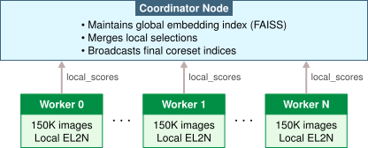

Data Selection
Purpose
Why can a carefully selected ten percent of your data match the accuracy of 100 percent?
The highest-impact optimization in machine learning operates upstream, before a single gradient is computed: on the data itself. Naive scaling assumes data is homogeneous, that every sample contributes equally to learning. Reality differs dramatically: in large-scale datasets, a tiny fraction of examples provides the majority of the gradient signal while the vast majority are redundant, noisy, or misaligned with the target distribution. This heterogeneity is not a statistical artifact but a systems optimization opportunity. Data engineering established that data is the source code of ML systems; data selection recognizes that not all source code is equally valuable and asks which lines of that code actually matter.
The practical consequences are enormous: compressing models and accelerating hardware speed up the execution of work, but data selection reduces the core workload itself. A training run that takes a week on the full dataset might take a day on a strategically selected subset, and that five-day savings compounds through every iteration of the development cycle: faster experimentation, more hyperparameter searches, quicker response to distribution drift, and lower barriers for teams with limited compute budgets. The shift is paradigmatic: from accumulating data as a massive liability to curating it as a precise resource, where every sample earns its place in the training set by contributing learning signal that no other sample provides.
Learning Objectives
- Explain data selection as a systems optimization that reduces the Total Operations (\(O\)) term in the iron law, following the D·A·M taxonomy
- Apply the Information-Compute Ratio (ICR) framework to evaluate dataset value and diagnose whether training is data-starved or compute-starved
- Compare coreset selection, deduplication, and quality pruning techniques for pretraining data reduction
- Apply the decision framework to determine which combination of static pruning, dynamic selection, and synthetic generation fits a given workload
- Design curriculum learning and active learning strategies that adapt the training data diet as the model learns
- Evaluate how self-supervised pretraining and the foundation model paradigm transform data economics through cost amortization
- Analyze the Selection Inequality, cost-benefit trade-offs, and engineering challenges in production data selection systems
Data Selection Fundamentals
Data selection asks a deceptively simple question with profound engineering consequences: given a clean, well-engineered dataset, which examples contribute the most learning per unit of compute cost? The data engineering infrastructure (Data Engineering) established the infrastructure for collecting, cleaning, and preparing data, producing pipelines that ingest raw signals and yield well-governed, versioned datasets ready for training. That chapter ensured data quality through correct labels, consistent schemas, and clean records. Data selection optimizes data value by extracting maximum learning from minimum samples, directly shrinking the Total Operations (\(O\)) term in the iron law (Principle \(\ref{pri-iron-law}\)). The distinction matters: quality asks whether data is correct, while value asks whether correct data is worth the compute spent processing it.
For decades, the dominant strategy was straightforward: more data, better models. Scaling laws1 (Kaplan et al. 2020; Hoffmann et al. 2022) confirmed that model performance improves predictably with dataset size, and teams responded rationally by scraping more web pages, labeling more images, and generating more synthetic examples. A critical asymmetry has since emerged. Hardware acceleration (Hardware Acceleration) has outpaced the growth of high-quality data. Accelerator compute capacity has increased faster than traditional Moore’s Law projections (architectural innovations like Tensor Cores and reduced-precision arithmetic stack on top of process-node gains, yielding effective throughput improvements faster than every two years) while the supply of novel, high-quality human-generated text and images grows at roughly 2\(\times\) every five years (Table 1). The internet has already been scraped. Domain experts cannot label faster. This asymmetry, which researchers call the Data Wall2 (Villalobos et al. 2022), has inverted the optimization priority from “get more data” to “get more from existing data.”
1 Scaling Laws: Jared Kaplan and colleagues at Johns Hopkins and OpenAI empirically demonstrated in 2020 that language model loss follows power-law relationships with model size, dataset size, and compute budget, each with predictable exponents. For data selection, the key consequence is quantitative: loss scales as \(L \propto D^{-\alpha}\) with \(\alpha \approx 0.095\), meaning each doubling of data yields diminishing returns – making it possible to calculate the exact point where selection becomes more cost-effective than collection.
2 Data Wall: Unlike compute (which scales with capital expenditure) or algorithms (which improve through research), the stock of high-quality human-generated text grows at roughly 2\(\times\) per five years. Projections from Epoch AI estimated that high-quality language data could be exhausted within one to two decades at then-current consumption rates, making data the first ML resource to face a hard physical supply ceiling rather than merely an economic one. This ceiling directly constrains the Total Operations (\(O\)) term: when quality data runs out, additional compute yields diminishing returns regardless of hardware throughput.
Table 1 quantifies the growth rates underlying this data-compute imbalance:
| Resource | Growth Rate | Implication |
|---|---|---|
| GPU Compute | ~10× / 3 years | Hardware vendors deliver reliable exponential gains |
| Training Data (Web) | ~2× / 5 years | High-quality web text is finite; much already scraped |
| Labeled Data | ~1.5× / 5 years | Human annotation throughput is inherently bounded |
| Synthetic Data | Unbounded | Bounded by generator quality (risk of model collapse) |
Trace the trend line in Figure 1: foundation models are consuming the stock of human-generated text at an accelerating rate, with projections suggesting exhaustion of high-quality public data on a timeline measured in years, not decades. The exhaustion timeline is not a distant concern. It shapes training strategies today.
{kind=link}
The gap between what compute can process and what quality data exists continues to widen. Maintaining model relevance requires the Continuous Training loops of MLOps (ML Operations), and intelligent data selection becomes increasingly critical as a result.
Systems Perspective 1.1: The Scaling Asymmetry
The Consequence: Compute budgets now support training runs that far exceed what available high-quality data can fill. The field has become compute-rich and data-poor.
The compute-data asymmetry inverts the optimization priority. When data was abundant and compute was scarce, the right strategy was algorithmic efficiency: squeeze more accuracy from limited GPU cycles. Now that compute is abundant and quality data is scarce, the winning strategy is data selection: squeeze more learning from each sample. Data selection operates upstream of all other optimizations. By pruning redundancy and selecting high-value samples, we reduce the workload before it ever enters the model or hits the hardware, directly shrinking the Total Operations (\(O\)) term in the iron law (see the following callout “Data Selection and the iron law” for a detailed analysis). For companies training frontier models, the bottleneck has shifted from GPU access to the quality and diversity of their training corpora.
The engineering toolkit for intelligent data selection follows Part III’s D·A·M taxonomy, which establishes a deliberate optimization ordering: Data first, then Algorithm, then Machine. Data selection puts the “highest leverage first” principle into practice by addressing whether work is necessary before asking how to simplify or accelerate it. A three-stage optimization pipeline structures the practical response to the data wall:
- Static Pruning: Removing low-value samples before training begins (coresets, deduplication).
- Dynamic Selection: Selecting high-value samples during training (curriculum learning, active learning).
- Synthetic Generation: Creating high-value samples on demand (augmentation, distillation).
Each stage increases the information density of the data that reaches the model, and together they form a complementary toolkit: pruning reduces what the pipeline contains, selection focuses how the pipeline uses it, and synthesis expands what the pipeline can access. Before examining these techniques, we must formalize what “data selection” means, why it is inherently a systems problem, and how to measure its effectiveness.
Defining data selection
Definition 1.1: Data Selection
Data Selection is the process of maximizing the Information-Compute Ratio of a training dataset.
- Significance (Quantitative): It identifies the smallest subset of data sufficient to define the decision boundary, reducing the Total Operations (\(O\)) of the iron law by eliminating redundant or noisy samples (\(D_{\text{vol}}\)) before they consume GPU cycles.
- Distinction (Durable): Unlike Data Engineering, which focuses on the Cleanliness and Consistency of data, Data Selection focuses on the Informativeness and Diversity of the samples.
- Common Pitfall: A frequent misconception is that more data is always better. In reality, it is the Quality of the Samples that matters: adding 10\(\times\) more low-quality data may yield less accuracy than 1.1\(\times\) carefully selected, high-quality data.
To make this concrete, consider training a model in the GPT-2/Llama Lighthouse family (Network Architectures), which spans the autoregressive large language model (LLM) family from GPT-2’s 1.5B parameters to Llama’s 7B–70B range, here using a 70B parameter language model:
The compute budget (10,000 H100 GPUs for 3 months) represents tens of millions of dollars and can process over 10T tokens. Yet only ~5T tokens of deduplicated, filtered web text exist, leaving a 2\(\times\) gap between what compute can process and what quality data can fill. The team faces three options: train on the same data for multiple epochs (diminishing returns after epochs 2–3), lower quality thresholds to include more data (degrades model quality), or invest in data selection through better filtering, curriculum design, and synthetic augmentation to extract more learning from each token. The third option is increasingly the dominant approach.
The data selection imperative applies across model architectures, though the bottlenecks differ. Unlike our compute-bound ResNet-50 Lighthouse, GPT-2/Llama models are memory bandwidth-bound during inference (though often compute-bound during training as well) and still benefit enormously from data selection during training. Each token processed requires the same forward/backward pass cost regardless of model bottleneck, so fewer tokens means fewer FLOPs. Because data selection benefits every architecture regardless of its dominant bottleneck, the appropriate framing is systemic rather than purely statistical.
Systems perspective
The data wall establishes why data selection matters; the systems perspective reveals how to approach it effectively. The conventional ML framing focuses on achieving the same accuracy with fewer samples, centering on statistical sample complexity and generalization theory. While valid, that framing misses the larger picture.
In this textbook, we adopt a systems framing that asks instead how to reduce the total cost of achieving target performance across the entire ML lifecycle. The shift moves attention from accuracy curves to resource consumption, as Table 2 illustrates.
| ML Framing | Systems Framing |
|---|---|
| “Fewer samples for same accuracy” | “Fewer FLOPs for same accuracy” |
| “Better generalization” | “Lower training cost (time, money, energy)” |
| “Sample complexity bounds” | “End-to-end resource efficiency” |
| “Learning theory” | “Cost engineering” |
The systems framing reveals optimization opportunities invisible to the ML framing. To see why, consider how data selection interacts with the iron law introduced in Iron Law of ML Systems.
Systems Perspective 1.2: Data Selection and the iron law
- Model compression: Reduces \(O\) per forward/backward pass
- Hardware acceleration: Increases \(R_{\text{peak}}\) (peak throughput) and \(\eta\) (utilization)
- Data selection: Reduces the number of passes through the entire equation
This makes data selection multiplicatively valuable: when all three optimizations act on the same bottleneck, a 2\(\times\) reduction in dataset size with 2\(\times\) model compression and 2\(\times\) hardware acceleration yields 8\(\times\) total cost reduction, not 6\(\times\).
Consider training cost reduction: a 50 percent reduction in dataset size does not merely improve sample efficiency; it directly halves the number of forward passes, backward passes, and gradient updates. For a USD 100 M training run, this translates to USD 50 M in compute savings. The relationship is linear and immediate.
Compute savings cascade through the entire infrastructure stack. Large datasets consume petabytes of storage and saturate network bandwidth during distributed training; deduplication and coreset selection reduce storage costs while eliminating I/O bottlenecks that can idle expensive GPU clusters. The savings extend to labeling economics: expert labeling costs ($5–100+ per sample in domains like medical imaging) often exceed compute costs, and active learning and semi-supervised methods reduce labeling budgets by 10–100\(\times\). The environmental implications compound further: training a large language model can emit hundreds of tons of CO₂, making data selection the most direct lever for Green AI, since halving the dataset halves training energy with no accuracy trade-off if done correctly. Smaller curated datasets also enable faster iteration velocity. A team that can iterate in hours rather than days has a compounding advantage in model development.
The cascading benefits illustrate a broader point: where the ML researcher asks “what is the sample complexity of this learning problem?”, the systems engineer asks “what is the cost-per-accuracy-point across the entire pipeline, from data acquisition through deployment?” This chapter provides the systems engineer’s toolkit for that question: techniques to minimize total cost, metrics to quantify efficiency gains, and architectural patterns to implement data selection at scale.
Information-compute ratio
The systems framing established earlier calls for a quantitative metric. The Optimize Principles (Part III) introduced the Pareto Frontier as the boundary where improving one metric necessarily degrades another, and identified three pillars of efficiency following the D·A·M taxonomy: Data, Algorithm (model compression, Model Compression), and Machine (hardware acceleration, Hardware Acceleration). As the first pillar in the D·A·M ordering, data selection addresses the most critical question: how much information does each sample contribute to the model’s learning per unit of computation? We formalize this with a central metric: the Information-Compute Ratio.
In the optimization triad (Figure 2), data selection plays the role of Input Optimization, reducing total workload before it enters the model or hardware. Model compression minimizes the math per parameter; hardware acceleration maximizes the math per second; data selection minimizes the total math required to reach convergence. The three edges of the triad capture the dominant bottlenecks: Compute Bound describes systems limited by arithmetic throughput, I/O Bound describes systems limited by data movement, and Sample Efficiency describes systems limited by the information content of training data.
{kind=link}
We can formalize this as the ICR: \[\text{ICR} = \frac{\Delta \text{Model Performance}}{\Delta \text{FLOPs}}\]
The ICR frontier: When data becomes a tax
The Information-Compute Ratio is not constant; it follows a law of diminishing returns. We define the ICR Frontier as the point where the marginal learning signal from additional data drops toward zero.
Mathematically, let \(I(D)\) be the information content of a dataset of size \(D\). In a redundant dataset, \(I(D)\) often scales logarithmically (\(\log D\)) while the compute cost \(C(D)\) scales linearly (\(O \cdot D\)). The resulting ICR follows Equation 1: \[\text{ICR}(D) = \frac{\frac{d}{dD} I(D)}{\frac{d}{dD} C(D)} \approx \frac{1/D}{O} = \frac{1}{O \cdot D} \tag{1}\]
The \(1/(O \cdot D)\) decay creates what we call The Data Wall. Beyond the frontier, adding more data yields near-zero learning but still costs linear compute. In this regime, data is no longer an asset; it is a Data Tax that inflates the \(O\) term of the iron law without improving the accuracy numerator of the RoC (Return on Compute, see The economic invariant: Return on compute (RoC)). A systems engineer’s goal is to keep the system operating at the “Knee” of the ICR curve, where the learning signal per FLOP is maximized. The static and dynamic selection techniques that follow are designed to achieve exactly that.
As detailed in the preceding “Data Selection and the iron law” callout, data selection turns the Total Operations (\(O\)) term from a fixed constant into a variable. By maximizing ICR, we reduce the total FLOPs required to reach a target performance level. A 2\(\times\) improvement in ICR is mathematically equivalent to a 2\(\times\) improvement in hardware Peak Throughput (\(R_{\text{peak}}\)), but often much cheaper to achieve. ICR focuses specifically on the compute component of the broader Selection Efficiency metric defined earlier, which also accounts for acquisition, labeling, and storage costs.
A random batch of raw data often has low ICR: it contains redundant examples, noisy samples, or “easy” examples the model has already mastered, wasting GPU cycles on zero-information updates. High-efficiency data pipelines (Figure 3) filter, order, and synthesize data to maximize ICR, ensuring that every FLOP contributes to learning. To illustrate, consider computing ICR on a concrete coreset selection task. Later in this chapter, Section 1.11 provides the complete measurement framework for evaluating these efficiency gains, including the compute-optimal frontier diagnostic that determines whether training is data-starved or compute-starved.
{kind=link}
With the ICR framework established, we can verify understanding of its core mechanics.
Checkpoint 1.1: Data Selection Efficiency
The goal of data selection is to maximize the ICR.
Metrics
The Pipeline
To make the Information-Compute Ratio concrete, consider how coreset selection improves training efficiency on a real workload.
Napkin Math 1.1: Computing ICR: Coresets
Setup:
- Dataset: ImageNet (1.28M images)
- Model: ResNet-50 Lighthouse (~4.1 GFLOPs per forward pass, ~8.2 GFLOPs forward + backward)
- One epoch: 1.28M\(\times\) 8.2 GFLOPs = 1.05e+16 FLOPs
- Accuracy improvement per epoch (early training): ~5.0 percent points
Random Selection (baseline):
- Process all 1.28M samples uniformly
- Accuracy gain: 5.0 percentage points
- ICR_random = 5.0 / (1.05e+16) = 4.8e-16 per FLOP
EL2N Coreset (50 percent of data):
- Process 641K high-uncertainty samples selected by EL2N scoring
- Coreset focuses on decision boundary samples
- Accuracy gain: 4.5 percentage points (90 percent of full data performance)
- Compute: 641K\(\times\) 8.2 GFLOPs = 5.3e+15 FLOPs
- ICR_coreset = 4.5 / (5.3e+15) = 8.6e-16 per FLOP
System Implication: The coreset achieves 1.8\(\times\) higher ICR, nearly twice the learning per FLOP, by eliminating low-information “easy” samples that contribute little to the decision boundary. The 0.5 percentage point accuracy difference is often acceptable given the 50 percent compute savings.
The three-stage optimization pipeline (static pruning, dynamic selection, and synthetic generation) provides the concrete techniques for maximizing ICR. Static pruning, the first stage, can reduce a dataset by 30 to 50 percent before training even begins.
Self-Check: Question
A team is deciding whether to invest engineering effort in curating their training corpus or in buying faster accelerators. Under the iron law of ML systems, which term of the equation does data selection most directly shrink?
- Peak throughput R_peak, because curated data is processed at higher FLOPs-per-second than raw data.
- Latency L_lat, because shorter datasets eliminate data-loading orchestration overhead.
- Utilization η, because cleaner samples produce denser kernels with fewer memory stalls.
- Total Operations O, because removing low-value samples reduces the number of forward and backward passes that must ever execute.
A 70B language-model team has enough H100 capacity to process about 10T tokens in three months, but deduplicated high-quality tokens in their corpus total only about 5T. Explain why buying twice as many H100s does not solve their problem, and identify what kind of investment closes the gap.
Two pretraining runs reach the same validation loss: Run X uses 2×10²² FLOPs and Run Y uses 4×10²² FLOPs. Under the Information-Compute Ratio framework, which statement is correct?
- Run Y has higher ICR because more FLOPs means the model saw more information.
- Run X has higher ICR because the same performance gain was delivered per half the compute.
- ICR is undefined because it requires the runs to share model architecture and batch size.
- Both runs have identical ICR because ICR measures final accuracy, independent of cost.
Order the following stages of the chapter’s three-stage data selection pipeline by the point in the training lifecycle at which each operates: (1) synthetic generation fills gaps where real data is scarce, (2) static pruning removes low-value samples before training begins, (3) dynamic selection adapts the data diet as the model learns.
True or False: A deduplicated, schema-validated, perfectly-labeled dataset is guaranteed to deliver high Information-Compute Ratio during training.
Static Pruning
Before a single gradient is computed, significant efficiency gains are available by removing low-value samples from the dataset. Pretraining filtration reduces total computation without affecting, and sometimes improving, final model accuracy, all without modifying the training loop or model architecture.
The case for smaller datasets
The most counterintuitive finding in data selection is that training on less data often produces models just as accurate as training on the full dataset. Practitioners have long assumed that more data yields better performance, and while this holds in many scenarios, it obscures a critical reality: typical large-scale datasets contain massive redundancy. Empirical studies on coreset selection and data pruning have consistently demonstrated this redundancy across standard benchmarks.
On CIFAR-10, gradient-based selection methods (EL2N, GraNd) (Paul et al. 2021) have shown that training on 50 percent of carefully selected samples matches the accuracy of the full dataset, with aggressive pruning reaching 10–30 percent of samples while retaining 90 percent+ of original performance. ImageNet-1K presents a harder challenge because it is less redundant, yet researchers have demonstrated that 20–30 percent of ImageNet can be pruned with negligible loss, and up to 50 percent reduction is possible with a small accuracy trade-off (~1 percentage point), yielding 2\(\times\) fewer training FLOPs (Paul et al. 2021; Sorscher et al. 2022). The pattern extends to language modeling: web-scraped corpora like The Pile3 and C44 contain substantial exact and near-duplicate content, and deduplication studies (Lee et al. 2021) report 10–30 percent redundancy ratios, with deduplicated training yielding better downstream performance through less memorization and more generalization.
3 The Pile: An 825 GB English text corpus aggregating twenty-two sub-datasets (PubMed, ArXiv, GitHub, Project Gutenberg, CommonCrawl, Stack Exchange, Wikipedia, USPTO patents). Its redundancy profile reveals the data selection problem concretely: CommonCrawl subsets exhibit 10–30 percent near-duplicate rates, whereas curated sub-corpora like ArXiv and USPTO contribute almost zero redundancy. Multi-source curation thus yields higher ICR at the same dataset size, because each deduplicated token is more likely to carry novel information for the model.
4 C4 (Colossal Clean Crawled Corpus): Applies aggressive filtering to Common Crawl data, removing pages with fewer than five sentences, deduplicating at the three-sentence level, and stripping boilerplate, JavaScript, and non-English content to produce approximately 750 GB of cleaned text. C4 demonstrated that filtering web data at scale could match curated dataset quality, establishing the “large-scale-with-filters” paradigm. The systems trade-off is direct: the CPU cost of filtering is negligible compared to the GPU cost of training on the unfiltered equivalent, making quality pruning one of the highest-ROI pretraining investments.
The reported gains are benchmark-specific. Pruning effectiveness depends on the dataset’s intrinsic redundancy, the selection algorithm, and the model architecture; always validate on the specific task before deploying aggressive pruning in production. The key insight remains: not all data points provide equal value for training.
Why does this heterogeneity exist? The answer lies in how neural networks learn decision boundaries. Most samples fall far from any class boundary: a picture of a dog in good lighting is obviously a dog. These “easy” examples provide diminishing returns after the first few epochs because the model has already mastered them. The informative samples cluster near boundaries where classes become ambiguous. Beyond sample redundancy, label quality also dramatically affects data requirements. The following analysis quantifies the data quality multiplier: how label noise penalizes convergence.
Napkin Math 1.2: The Data Quality Multiplier
The Math: Classical learning theory (for convex optimization with SGD) tells us that convergence rates depend on label noise. While deep learning operates in a non-convex regime, the qualitative relationship holds broadly.
- Clean Data: Convergence rate is typically \(O(1/N)\). Halving the error requires 2\(\times\) data.
- Noisy Data: Convergence rate drops to \(O(1/\sqrt{N})\). Halving the error requires 4\(\times\) data.
The Multiplier: To reach a target error \(\epsilon\):
- \(N_{clean} \propto 1/\epsilon\)
- \(N_{noisy} \propto 1/\epsilon^2\)
Example: For target error \(\epsilon\) = 0.01 (1 percent):
- \(N_{clean}\) ≈ 100
- \(N_{noisy}\) ≈ 10,000
- Ratio: 100\(\times\) more data required if noisy.
System Implication: Cleaning the dataset (removing label noise) is a 100\(\times\) compute accelerator.
The practical question then becomes how to identify which samples to keep.
Coreset selection algorithms
Coreset selection5 answers this question by identifying a small subset of data that preserves the statistical properties of the entire dataset.
5 Coreset (Core Set): The method’s guarantee comes from computational geometry, where a small subset of points is proven to approximate the geometric properties of the full set within a \((1 + \varepsilon)\) factor. In machine learning, this preserves the statistical structure of the data, ensuring the loss landscape of a model trained on the coreset approximates the true loss landscape. This provable bound on error is the critical distinction from random downsampling, which offers no such guarantee.
The goal is to find a compact set of examples that allows a model to generalize as well as it would if trained on the full dataset. Several algorithmic families have proven effective, each with distinct computational trade-offs.
Geometry-based methods select samples that cover the data distribution without requiring any model training. The k-Center algorithm6 (also known as Facility Location) selects samples that minimize the maximum distance from any point to its nearest selected center, ensuring coverage of the entire data manifold.
6 k-Center Algorithm: Its greedy strategy directly explains the coverage guarantee: it iteratively picks the point farthest from any existing center, forcing the selection to expand into uncovered regions of the data manifold. This geometric purity is its primary weakness; by ignoring class labels, it can undersample rare but critical examples near a decision boundary, making its provably optimal two-approximation for coverage a poor proxy for downstream model accuracy.
Herding takes a different approach, iteratively selecting samples whose features best approximate the mean of the full dataset, thereby maintaining distributional fidelity. These methods are computationally attractive because they operate purely on feature representations, but they ignore label information entirely.
Gradient-based methods offer higher selection quality by using training dynamics to identify important samples, though they require training a proxy model first. GraNd (Gradient Normed) and EL2N (Error L2-Norm)7 score samples by gradient magnitude or prediction error early in training; high-scoring samples lie near the decision boundary and are most informative for learning. Crucially, these scores transfer across architectures: scores computed on a smaller model like ResNet-18 predict importance for larger models like ResNet-50, enabling inexpensive proxy-based selection. Forgetting Events8 tracks how often a sample is “forgotten” (correctly classified, then later misclassified) during training, identifying harder and more valuable examples.
7 EL2N (Error L2-Norm) and GraNd (Gradient Normed): These methods score samples based on their error or gradient norm early in training, identifying samples the model finds most difficult. The practicality of this approach relies on transferability, where scores from a small proxy model can guide data selection for a much larger target model. For instance, a proxy trained for just five epochs can generate scores to curate a dataset for a full 90-epoch production training run.
8 Forgetting Events: This method identifies valuable examples by tracking when the model “forgets” them—transitioning from a correct to an incorrect classification during training. The central trade-off is the high cost of this analysis, which requires a full training run. However, the resulting importance scores transfer reliably from small proxy models to large target models (for example, ResNet-18 to ResNet-50), which is precisely what makes the “inexpensive proxy-based selection” strategy viable.
Gradient-based approaches generally outperform geometry-based methods in selection quality but incur the overhead of proxy model training. The quality advantage justifies the proxy training overhead for most production workloads, as Table 3 quantifies:
| Method | Compute Cost | Requires Training | Best For | Limitation |
|---|---|---|---|---|
| k-Center | O(N²) or O(NK) | No | Coverage, exploration | Ignores label information |
| Herding | O(NK) | No | Distribution matching | Assumes Gaussian-like |
| GraNd | O(epochs\(\times\) N) | Yes (few epochs) | Decision boundaries | Requires proxy training |
| Forgetting | O(full training) | Yes (full) | Hard examples | Expensive to compute |
| EL2N | O(epochs\(\times\) N) | Yes (few epochs) | Uncertainty sampling | Best with proxy model |
Each algorithm in Table 3 represents a different answer to the ICR framework’s central question: where in the compute-vs.-information trade-off should the selection budget be spent to maximize learning signal per FLOP?
Figure 4 makes the core insight behind coreset methods concrete. Compare the two panels: random sampling (left) selects points uniformly across the feature space, capturing many samples deep within class regions where the model is already confident. Coreset selection (right) concentrates the selection budget on samples near the decision boundary (the yellow uncertainty band) where the model’s predictions are most uncertain. These boundary samples are precisely where additional training provides the most learning signal.
{kind=link}
Given these trade-offs, most practitioners find that EL2N with a small proxy model offers the best balance of selection quality and computational cost. The approach is straightforward: train a lightweight model (for example, ResNet-18 instead of ResNet-50) for five to ten epochs, compute EL2N scores for all samples, then select the highest-scoring subset. The proxy does not need to be accurate; it only needs to identify which samples are hard. This upfront investment in proxy training typically yields substantial returns when the coreset reduces subsequent training by 50 percent or more. The following example illustrates this workflow in a concrete scenario.
Example 1.1: Coreset Selection in Practice
The Insight: Random sampling loses rare classes and edge cases. Instead, a coreset approach focuses on the most informative samples:
- Train a small proxy model for 5 epochs
- Compute EL2N scores for all samples
- Select the 100,000 samples with highest uncertainty
- Train the full model on this coreset
The Systems Lesson: The coreset often achieves higher accuracy than random sampling because it focuses on the decision boundary rather than redundant “easy” examples.
Listing 1 demonstrates how to compute EL2N scores and select a coreset using a lightweight proxy model. The code shows two functions: compute_el2n_scores trains a proxy model briefly and measures prediction confidence via L2 distance from one-hot labels, while select_coreset retains only the highest-uncertainty samples.
compute_el2n_scores function trains a small model for a few epochs, then measures prediction confidence via L2 distance from one-hot labels. High scores indicate uncertain samples near decision boundaries. The select_coreset function retains only these informative samples, discarding redundant easy examples.
def compute_el2n_scores(model, dataloader, num_epochs=5):
"""Compute EL2N scores.
Returns L2 norm of (prediction - one_hot_label).
"""
# Train proxy model for a few epochs to get meaningful predictions
train_proxy(model, dataloader, num_epochs)
scores = []
model.eval()
for x, y in dataloader:
logits = model(x)
probs = softmax(logits, dim=1)
# One-hot encode labels
one_hot = zeros_like(probs).scatter_(1, y.unsqueeze(1), 1)
# EL2N score = L2 distance from confident prediction
el2n = (probs - one_hot).norm(dim=1) # High = uncertain
scores.extend(el2n.tolist())
return scores
def select_coreset(scores, dataset, fraction=0.1):
"""Select top-k highest-scoring (most uncertain) samples."""
k = int(len(dataset) * fraction)
# Sort by score descending (highest uncertainty first)
indices = argsort(scores, descending=True)[:k]
return Subset(dataset, indices)
# Usage: 10x data reduction with minimal accuracy loss
scores = compute_el2n_scores(proxy_model, full_loader)
coreset = select_coreset(scores, full_dataset, fraction=0.1)
train_full_model(model, coreset) # 10x faster trainingData deduplication
While coreset selection identifies which samples to keep based on their informativeness, a complementary approach targets what to remove: exact and near-duplicates. Deduplication provides immediate efficiency gains with no accuracy penalty and requires no model training. This makes it the most accessible optimization in data selection, offering guaranteed compute savings with zero risk of degrading model quality.
The simplest form of deduplication (introduced as a data engineering pipeline stage in Systematic Data Processing, and here elevated to an optimization lever) uses hash-based methods for exact matches. By computing a cryptographic hash (MD5 or SHA-256) for each sample and removing those with identical hashes, practitioners can eliminate byte-for-byte duplicates that inevitably accumulate in large web-scraped corpora. This process is computationally cheap, scaling linearly with dataset size, and can be parallelized trivially.
Near-duplicate detection addresses the more subtle problem of semantically redundant content that differs at the byte level. For text, MinHash9 with Locality-Sensitive Hashing10 (LSH) approximates Jaccard similarity11 efficiently, detecting paraphrased or lightly edited content. The core idea is to create compact “fingerprints” of each document such that similar documents produce similar fingerprints with high probability, enabling fast approximate similarity detection without comparing every document pair.
9 MinHash: Invented by Andrei Broder in 1997 (Broder 1997) to detect duplicate web pages for AltaVista, the algorithm creates compact “signatures” using random hash functions such that similar documents produce similar signatures with high probability. Each signature compresses a document to a fixed-size sketch (typically 128–256 hash values), enabling similarity estimation between any two documents in \(O(1)\) time. For ML pretraining pipelines processing billions of documents, MinHash reduces deduplication storage from terabytes of raw text to gigabytes of signatures.
10 Locality-Sensitive Hashing (LSH): LSH works by hashing MinHash document fingerprints into buckets such that similar fingerprints are highly likely to collide. This probabilistic bucketing avoids the quadratic cost of comparing every document pair, directly enabling the efficiency described. The core trade-off is that tuning for higher recall (fewer missed duplicates) by using more hash functions increases computational cost, shifting the problem from an infeasible \(O(N^2)\) complexity toward a manageable \(O(N)\).
11 Jaccard Similarity: Defined as \(|A \cap B| / |A \cup B|\), ranging from 0 (disjoint) to one (identical). For deduplication, the metric’s set-based formulation naturally handles documents of different lengths without normalization. The practical threshold matters: setting Jaccard similarity above 0.8 catches near-duplicates while preserving legitimately similar-but-distinct content, but lowering it below 0.5 risks collapsing topically related documents and reducing dataset diversity.
12 CLIP (Contrastive Language-Image Pretraining): Pretrained on 400 million image-text pairs, CLIP maps visually distinct but semantically similar images to a shared embedding space, enabling semantic deduplication across visual concepts. This capability comes at a cost: generating an embedding requires a full forward pass through a large vision transformer, making it over 100\(\times\) more computationally expensive per sample than perceptual hashing.
For images, perceptual hashing produces signatures robust to minor transformations like resizing and compression, identifying visually identical images stored in different formats. Embedding-based similarity offers the highest-fidelity detection by computing dense representations (CLIP12 for images, sentence transformers for text) and clustering similar items, though this approach incurs higher computational overhead.
Foundation model pretraining now treats deduplication as essential. Studies on GPT-3 and LLaMA training demonstrate that deduplicated data improves both training efficiency and downstream performance by preventing memorization of repeated content. Deduplication delivers two gains: fewer wasted FLOPs on redundant samples, and better generalization because the model sees more diverse examples per training token.
Deduplication benefits extend beyond text corpora. The Deep Learning Recommendation Model (DLRM) lighthouse presents a unique variant of this challenge centered on embedding deduplication.
Lighthouse 1.1: DLRM and Embedding Deduplication
Data selection for DLRM focuses on interaction deduplication (removing redundant user-item pairs) and embedding pruning (removing or sharing cold embeddings). A 20 percent reduction in unique interactions can reduce embedding table size by 30–40 percent, directly addressing DLRM’s primary bottleneck: memory capacity rather than compute.
Data pruning by quality
Deduplication removes redundant samples, but a third category of problematic data remains: samples that actively harm learning. Quality-based pruning eliminates samples that either contribute no meaningful signal or introduce contradictory information that confuses the optimization process.
Label error detection represents the most impactful form of quality pruning. Tools like Cleanlab identify samples where the assigned label is likely incorrect based on model confidence patterns across training. A sample that the model consistently predicts as class A but is labeled class B either represents a hard case near the decision boundary or, more commonly, an annotation mistake. Removing or correcting these mislabeled samples prevents the model from learning contradictory signals that degrade its decision boundary.
Outlier removal addresses a different pathology: samples far from any cluster center in feature space. While outliers might represent valuable edge cases, they more often indicate noise, annotation errors, or data corruption. The key is distinguishing between informative outliers (rare but valid examples of a class) and noise (samples that do not belong to any class). Conservative thresholds help avoid discarding genuinely rare examples.
Low-information filtering applies domain-specific heuristics to remove samples that lack sufficient signal for learning. For text corpora, this means removing documents below a perplexity threshold or with low semantic coherence, often indicative of machine-generated spam or garbled content. For image datasets, filtering targets blurry, corrupted, or near-uniform samples that provide little visual information.
Together, these three static pruning techniques, coreset selection, deduplication, and quality filtering, show that careful curation before training yields significant efficiency gains. The compute savings are multiplicative across the entire training process: a 50 percent dataset reduction means 50 percent fewer forward passes, backward passes, and gradient updates across all training epochs. For a model trained for 100 epochs, this translates to 50 epochs worth of saved compute, yielding substantial reductions in both training time and energy consumption.
Static pruning answers a question about what to keep, but it treats the answer as fixed. Once the pruned dataset is set, every epoch trains on the same subset. The optimal training samples, however, change as the model learns: examples that challenge an undertrained model become trivially easy after sufficient gradient updates. Dynamic selection techniques address this limitation by adapting the training data at each stage based on what the model has already mastered.
Self-Check: Question
Why can a 10 percent coreset of a modern vision dataset sometimes match the full dataset’s top-1 accuracy within one percentage point, despite training on a tenth of the samples?
- Because neural networks discard most examples after the first epoch, so any random 10 percent subset works equally well.
- Because smaller datasets eliminate overfitting regardless of the selection method used.
- Because pruning triggers an architecture change in modern frameworks that compensates for the reduced data volume.
- Because large datasets contain substantial easy-example redundancy and some noisy samples, while boundary and high-information examples dominate the learning signal.
A vision team wants the highest coreset quality for a 100M-image dataset and is willing to pay roughly 1 percent of full-target-model training cost on upfront scoring. Which selection method best matches this budget and quality target?
- Exact-match deduplication hashing alone, because hashes directly identify the decision-boundary samples that matter most for accuracy.
- k-Center geometric coverage without any training signal, because the method is the cheapest to run and treats all classes symmetrically.
- EL2N scores computed with a small proxy model early in training, because early-training error norms locate decision-boundary samples and transfer well to larger targets.
- Full-dataset forgetting-event analysis run on the target model itself, because only target-model dynamics give trustworthy importance scores.
The chapter argues that noisy-label convergence scales as O(1/√N) while clean-label convergence scales as O(1/N). Using the chapter’s own order-of-magnitude figures, explain why investing engineering effort to remove label noise can save more compute than buying faster accelerators.
An engineering team wants immediate pretraining-cost savings with near-zero risk of hurting downstream accuracy. Which static-pruning technique matches that risk profile, and why?
- Deduplication, because removing exact and near-duplicate samples cuts wasted compute without altering the supervision distribution the model sees.
- Forgetting-events selection on the full training dynamics, because it produces the most-reliable per-sample scores.
- Aggressive outlier removal below the fifth percentile of embedding density, because rare samples tend to be noise.
- High-confidence pseudo-labeling on web-scraped unlabeled data, because pseudo-labels are always lower risk than real labels.
A fraud-detection dataset has 1 million benign transactions and 2,000 fraud transactions. A naive top-EL2N coreset at 10 percent produces a subset with only 60 fraud examples, and the deployed model’s recall on fraud collapses from 82 percent to 34 percent. Explain the failure and propose the corrected selection strategy.
Dynamic Selection
The optimal training samples do change as the model learns. Early in training, the model benefits from diverse coverage to build broad feature representations; later, it benefits from focusing on hard examples near the decision boundary to refine its predictions. Dynamic selection exploits this insight by optimizing which samples to use during training, adapting the data diet based on the model’s evolving state.
Curriculum learning: Easy to hard
The first dynamic selection technique, curriculum learning13 (Bengio et al. 2009; Soviany et al. 2022), structures the order in which data is presented to the model. Instead of random shuffling, it starts with simpler examples and gradually introduces more complex ones, mirroring how humans learn by mastering basics before advancing to harder material.
13 Curriculum Learning: From Latin currere (“to run”), originally meaning “the course to be run” – a metaphor that maps directly to the technique: training data as a course run in deliberate order, easy stretches first. The key insight is that curriculum learning acts as a continuation method for non-convex optimization: starting with easy examples smooths the loss landscape, helping the optimizer find better local minima. From a systems perspective, the ICR varies within a training run – easy samples have high ICR early but near-zero ICR later – which is precisely why presenting them first and phasing them out improves total compute efficiency.
The effectiveness of curriculum learning stems from how neural networks respond to gradient signals at different training stages. Easy examples provide clear, consistent gradients that establish strong feature representations early in training, when the loss landscape is highly irregular. Hard examples introduced too early produce noisy gradient signals that slow convergence or cause the model to memorize outliers rather than learn general patterns. By sequencing examples from easy to hard, curriculum learning smooths the optimization trajectory.
Implementing a curriculum requires two components: a difficulty scorer that ranks samples, and a pacing function that controls how quickly hard samples are introduced. A common choice is linear pacing: \[ \text{samples}_t = \texttt{sort\_by\_difficulty}[:N \cdot \min(1, t/T_{\text{warmup}})] \] where \(t\) is the current epoch and \(T_{\text{warmup}}\) is the epoch at which the full dataset becomes available. Early epochs train on the easiest \(N \cdot (t/T_{\text{warmup}})\) fraction; after warmup, training proceeds on the full dataset.
The difficulty scorer can be designed in several ways, each with different computational requirements and applicability (Table 4).
| Strategy | Difficulty Score | Best For |
|---|---|---|
| Loss-Based | Loss from probe model (low = easy) | General-purpose; requires probe training |
| Confidence-Based | Teacher model confidence (high = easy) | When teacher available; distillation setups |
| Domain Heuristics | Sentence length, image complexity | No extra compute; domain knowledge required |
| Self-Paced | Current model’s loss (updated each epoch) | Adaptive; no probe needed |
From a systems perspective, curriculum learning improves convergence by reducing wasted gradient updates on samples the model cannot yet learn from. The Information-Compute Ratio is higher in early training because easy samples provide strong learning signal relative to their compute cost. The efficiency gains manifest as faster convergence to target accuracy, not higher final accuracy. Table 5 summarizes measured speedups from curriculum learning across standard benchmarks:
Observe the varying convergence gains in Table 5:
| Dataset | Model | Pacing Strategy | Epochs to Target Acc. | Speedup |
|---|---|---|---|---|
| CIFAR-10 | ResNet-18 | Linear warmup | 115 vs. 150 baseline | 23% faster |
| CIFAR-100 | ResNet-32 | Self-paced | 180 vs. 220 baseline | 18% faster |
| ImageNet | ResNet-50 | Loss-based | 80 vs. 90 baseline | 11% faster |
| ImageNet | ResNet-50 | MentorNet (noisy) | 70 vs. 90 baseline | 22% faster |
The table reveals an important pattern: curriculum learning gains are inversely proportional to dataset quality. On highly curated datasets like ImageNet, the 11 percent speedup is modest. On noisy or redundant data, gains can exceed 20 percent. The optimal ordering is also task-dependent: anti-curriculum (hard examples first) can work when the decision boundary is complex and easy examples contribute little to defining it, while self-paced learning lets the model dynamically adjust difficulty based on its current loss, eliminating the need to pre-define a curriculum. Empirically, self-paced methods often match or exceed hand-designed curricula.
Active learning: Human-in-the-loop
Curriculum learning optimizes the order in which samples are presented but assumes all samples are already labeled. This assumption breaks down in specialized fields such as medical diagnosis, autonomous driving, and scientific research, where labeling requires domain expertise and can cost $5–$100 or more per sample. Rather than labeling everything upfront, active learning14 (Settles 2012; Ren et al. 2021) shifts the optimization target: instead of choosing which labeled samples to train on, it chooses which unlabeled samples are worth labeling at all.
14 Active Learning: The “active” component is the learning algorithm itself selecting which unlabeled samples a human expert should label next. This reframes the problem from a computational optimization (training on given data) to a financial one: maximizing model improvement per dollar spent on expert labeling. Forcing the model to query only the most informative examples can yield a 10–100\(\times\) reduction in labeling costs compared to random sampling.
Unlike static pruning, which discards samples permanently, active learning maintains an unlabeled pool and queries it strategically over time. Follow the cycle in Figure 5: the model’s current uncertainty determines what gets labeled next, creating a feedback loop where each labeling round improves the model’s ability to identify what it still needs to learn.
{kind=link}
The effectiveness of active learning depends critically on the query strategy used to select samples for annotation. The simplest approach, uncertainty sampling, selects samples where the model is least confident, such as predictions near 0.5 probability for binary classification. This strategy is computationally cheap and effective in practice. Query-by-committee extends this idea by training multiple models and selecting samples where they disagree most, capturing epistemic uncertainty that a single model might miss.
For practitioners willing to invest more compute, expected model change selects samples that would cause the largest gradient update if labeled. This approach provides a theoretically grounded but expensive alternative. Diversity sampling complements uncertainty-based methods by selecting samples dissimilar from currently labeled data, ensuring the labeled set covers the full input space rather than clustering around ambiguous regions.
Active learning is particularly valuable in domains where labeling requires expertise. In medical imaging, for instance, an AI system diagnosing diseases from X-rays may be confident on common conditions but uncertain about rarer cases. By focusing human annotation on these ambiguous cases, active learning optimizes the use of expensive expert time while accelerating model improvement.
The economic implications are substantial. In production settings, labeling costs often dwarf compute costs because a specialist’s time is far more expensive than GPU hours. These query strategies drive each iteration of the active learning loop in Figure 5, and the active learning ROI can exceed 10\(\times\), as the following example demonstrates.
Napkin Math 1.3: The Active Learning ROI
Scenario A: Naive Labeling
- Cost: Labeling all 1M scans would cost $5,000,000 (10\(\times\) over budget).
- Time: You can only afford to label 100,000 random scans.
- Result: Your model misses rare pathologies because they were not in the random 10 percent.
Scenario B: Active Learning
- Strategy: Use an uncertainty-based selection to pick the 50,000 “hardest” scans for the doctor to label.
- Cost: 50,000\(\times\) 5.00 = $250,000. (50 percent under budget).
- Training Speed: With 20\(\times\) less data, each training epoch is 20\(\times\) faster.
- Result: Empirical studies suggest that these 50,000 “high-information” samples often achieve higher accuracy than 100,000 random samples.
System Implication: Data Selection functions as a 20\(\times\) compute accelerator and a $4.75 Million cost-saving measure, delivering gains that compound with every training iteration.
Compare the two curves in Figure 6: Active Learning shifts the learning curve to the left, achieving target accuracy with far fewer samples than random selection. The curves are illustrative to highlight the qualitative gap.
{kind=link}
Active learning yields more than cost savings: it directs the model toward precisely the examples that matter most. The Smart Doorbell Lighthouse illustrates this principle in the context of hard negative mining.
Lighthouse 1.2: Mining for Hard Negatives
Random sampling will miss these rare failures. Instead, the Wake Vision team uses Active Learning to specifically query the Oracle (human reviewers) on low-confidence predictions. If the model sees a “statue” and predicts “Person (51 percent)”, that sample is flagged for labeling. This turns the feedback loop from a random walk into a guided search for the decision boundary, reducing the data required to solve the “statue problem” by orders of magnitude compared to random collection.
Semi-supervised learning: Using unlabeled data
Consider a medical imaging dataset: a hospital has 50,000 chest X-rays, but only 500 have been reviewed and labeled15 by radiologists—a labeling rate of one percent. Training a supervised model on 500 examples yields poor accuracy, but the structural patterns in the remaining 49,500 unlabeled images contain information about what healthy and abnormal lungs look like. Semi-supervised learning exploits this abundant unlabeled data to improve the model trained on the scarce labeled examples.
15 Clinical Labeling Economics: A radiologist reviews approximately 50–80 chest X-rays per hour; labeling 500 scans from a pool of 50,000 requires 7–10 hours of specialist time at $150–300 per hour — a $1,000–3,000 investment. Full supervised labeling of all 50,000 would cost $75,000–150,000 and require months of specialist availability. The one percent labeling threshold is not a pedagogical convenience but a reflection of healthcare economics: semi-supervised learning is not optional in clinical ML, it is the only approach that fits within clinical research budgets. This cost structure generalizes — any domain requiring credentialed specialists (legal, financial, scientific) faces the same arithmetic.
Active learning optimizes which samples to label but still requires human annotation for every selected example. Semi-supervised learning takes a more aggressive approach: rather than asking which samples to label, it asks whether we can extract learning signal from unlabeled data directly. It uses a small set of labeled examples to guide learning on a much larger unlabeled pool, typically achieving 80–95 percent of fully supervised accuracy with only 10–20 percent of the labels.
The core insight behind semi-supervised learning is that unlabeled data, while it cannot directly teach the mapping from inputs to outputs, contains structural information about the input distribution \(P(X)\) that constrains the hypothesis space. A decision boundary that cuts through dense regions of \(P(X)\) is unlikely to generalize well because it would assign different labels to similar inputs. Semi-supervised methods use unlabeled data to push decision boundaries toward low-density regions, where class transitions are more likely to occur naturally.
Three main techniques implement this insight. Pseudo-labeling16 takes the most direct approach: train on labeled data, use the model to generate “pseudo-labels” for high-confidence unlabeled predictions, then retrain on both. The confidence threshold is critical: setting it too low introduces label noise that degrades learning, while setting it too high wastes potentially useful data.
16 Pseudo-labeling: Uses a trained model’s own confident predictions as ground-truth labels for unlabeled data. The technique’s effectiveness depends on a virtuous cycle: accurate predictions on easy unlabeled examples expand the training set, improving the model, which enables accurate predictions on harder examples. The failure mode is equally self-reinforcing: incorrect pseudo-labels reinforce errors through confirmation bias, making the confidence threshold a critical systems parameter. Setting it too low compounds label noise across training iterations; setting it too high wastes unlabeled data that could contribute learning signal.
17 Consistency Regularization: Rooted in the smoothness assumption: if two inputs \(x_1\) and \(x_2\) are close in input space, their labels should also be close. The training objective minimizes divergence between a model’s predictions on an input and its augmented version. This is conceptually distinct from data augmentation (which creates more training examples) because it explicitly enforces prediction consistency as a loss term, even for unlabeled data where the “correct” label is unknown. The systems consequence: consistency regularization extracts learning signal from unlabeled samples at the cost of doubling forward-pass compute per sample, a trade-off that favors GPU-rich, label-poor settings.
18 FixMatch: It generates a pseudo-label using a weakly augmented image and then trains the model to predict that same label for a strongly augmented version of the image. This consistency training is gated by a confidence threshold; a pseudo-label is only used if the model’s prediction on the weak augmentation is highly confident (for example, >0.95). This embodies a direct systems trade-off, exchanging roughly 5\(\times\) more GPU compute for a potential 200\(\times\) reduction in manual labeling cost.
Consistency regularization17 takes a different angle by enforcing that the model produces similar predictions for augmented versions of the same input. A robust classifier should be invariant to realistic perturbations like cropping, rotation, or color shifts. Methods like FixMatch18 combine both approaches, assigning pseudo-labels only to samples where the unaugmented prediction is confident but training the model to predict these labels on strongly augmented versions of the same images.
Label propagation offers a third paradigm through graph-based reasoning: construct a similarity graph over all samples and propagate labels from labeled nodes to their neighbors. This approach works particularly well when the feature space exhibits clear cluster structure.
The systems trade-off in semi-supervised learning is straightforward: it typically achieves the same accuracy as fully supervised training with 5–10\(\times\) fewer labels but requires more compute because training processes both labeled and unlabeled samples. Since labeling costs often dominate compute costs in production settings, this trade-off is usually favorable. The results of FixMatch on CIFAR-10 illustrate this label efficiency concretely.
Example 1.2: FixMatch on CIFAR-10
| Label Budget | Method | Accuracy | Label Efficiency |
|---|---|---|---|
| 50,000 (100 percent) | Fully Supervised | 96.1% | Baseline |
| 4,000 (8 percent) | FixMatch | 95.7% | 12.5\(\times\) more efficient |
| 250 (0.5 percent) | FixMatch | 94.9% | 200.0\(\times\) more efficient |
| 40 (0.08 percent) | FixMatch | 88.6% | 1250.0\(\times\) more efficient |
With only 250 labeled samples (twenty-five per class), FixMatch achieves 94.9 percent accuracy, within 1.2 points of full supervision using 200.0\(\times\) fewer labels. The technique works by generating pseudo-labels on weakly augmented unlabeled images (only when model confidence exceeds 0.95), then training to predict these labels on strongly augmented versions of the same images.
The Systems Insight: Semi-supervised learning trades labeled data for unlabeled data and compute. On CIFAR-10, training FixMatch requires ~5\(\times\) more compute than supervised training (processing 50K unlabeled samples per epoch). When labels cost $1 each and GPU hours cost $0.50, the math favors semi-supervised:
- Supervised (4,000 labels): $4,000 labeling + $50 compute = $4,050
- FixMatch (250 labels): $250 labeling + $250 compute = $500
An 8\(\times\) cost reduction for ~1.2 points of accuracy loss.
The efficiency gains are substantial, but semi-supervised learning is not universally applicable. The technique assumes that unlabeled data comes from the same distribution as labeled data, and it struggles when unlabeled data contains out-of-distribution samples (the model confidently mislabels them), when class imbalance is severe (pseudo-labels amplify majority class bias), or when the labeled set does not cover all classes (preventing label propagation for unseen classes). Always validate on a held-out set with true labels to catch distribution mismatch.
Despite these limitations, semi-supervised learning reduces label requirements by 5–10\(\times\) while maintaining accuracy. The trajectory across techniques is clear: coreset selection and deduplication prune low-value samples before training; curriculum learning optimizes the order of presentation during training; active learning queries only the most informative samples for human annotation; and semi-supervised learning exploits unlabeled data to stretch those annotations further. Each technique has pushed the label requirement lower, but none has eliminated it. The progression raises a deeper possibility: that task-specific labels may not be necessary at all. The structure of data itself—that cat images resemble other cat images and coherent sentences follow grammatical patterns—may provide a sufficient supervision signal.
Self-Check: Question
What distinguishes dynamic selection from static pruning as an optimization strategy?
- Dynamic selection guarantees higher final accuracy because every sample is seen the same number of times over training.
- Dynamic selection is primarily a disk-footprint optimization that removes samples from storage as training progresses.
- Dynamic selection replaces human labels with self-supervised objectives during the training loop.
- Dynamic selection adapts which samples are emphasized to the model’s current state, recognizing that an example’s informativeness shifts as the model learns.
A team trains a vision model on a moderately noisy 50M-image dataset and wants to accelerate convergence by reshaping the per-epoch sample order. Which design is curriculum learning as the chapter describes it?
- Pseudo-label every unlabeled sample unconditionally to expand training volume as quickly as possible.
- Query the single most uncertain unlabeled sample each round and route it to a human annotator.
- Score samples by a difficulty metric, then introduce them using a pacing schedule that starts with the easiest fraction and gradually widens to include harder ones as training progresses.
- Randomly permute the dataset every epoch so the optimizer cannot exploit any ordering.
In the chapter’s medical-imaging example, active learning reaches a target accuracy with about 50,000 expert-labeled scans while random sampling needs roughly 200,000 to reach the same accuracy. Explain why active learning produces this 4× labeling-ROI advantage, and state one compute consequence beyond labeling cost.
From the chapter’s perspective, why is FixMatch a favorable systems trade-off for label-poor settings?
- It reduces both compute and labels simultaneously, making it strictly cheaper on every axis.
- It eliminates the need for any labeled examples, reducing labeling cost to zero.
- It trades additional compute on unlabeled data (two augmentation passes per unlabeled sample plus confidence gating) for a large reduction in manual labeling cost, typically at a small accuracy drop.
- It is robust to distribution mismatch between labeled and unlabeled pools because its augmentation step erases the difference.
True or False: If a team has 100× more unlabeled data than labeled data, semi-supervised learning is almost guaranteed to improve accuracy regardless of whether the unlabeled pool was scraped from a different distribution than the labeled task data.
Self-Supervised Learning
GPT was trained to predict the next word in a sentence. BERT was trained to fill in masked words. Neither task required a single human label. Self-supervised learning19 generalizes this insight: by designing pretext tasks that derive supervision from the data’s inherent structure, models learn general-purpose representations from unlabeled data at scale. Where the progression from active learning to semi-supervised learning drove required labels asymptotically toward zero, SSL breaks through that asymptote entirely. It represents the field’s most effective response to the data wall introduced in Section 1.1: rather than searching for more high-quality labeled data in a finite pool, SSL redefines what counts as training data by extracting supervision from the structure of unlabeled corpora that exist at web scale.
19 Self-supervised Learning: The pretext task—predicting the next word (GPT) or a masked word (BERT)—provides a supervisory signal inherent to the unlabeled data itself, removing the human-labeling bottleneck. This reframes the system-building challenge from one of data acquisition to one of pure computational investment, where pretraining can cost >\(10{,}000\times\) more than a single downstream fine-tuning. The expense is amortized across thousands of downstream tasks.
The key insight is that labels represent just one form of supervision. Data structure itself provides rich learning signals that require no human annotation, as Table 7 summarizes.
| Modality | Self-Supervised Task | Supervision Signal |
|---|---|---|
| Text | Masked language modeling | Predict [MASK] from context |
| Text | Next-token prediction | Predict next word in sequence |
| Images | Contrastive learning | Same image (augmented) vs. different images |
| Images | Masked autoencoding | Reconstruct masked patches |
| Multi-modal | CLIP-style alignment | Match image-text pairs |
Pretext tasks generate supervision signals automatically. A model trained to predict masked words necessarily learns grammar, semantics, and world knowledge; a model trained to distinguish augmented views of the same image learns visual features invariant to transformations. The architectural details of these approaches, from contrastive methods like SimCLR and MoCo to masked modeling and generative pretraining, are examined in Network Architectures. From a data selection perspective, the systems implication is what matters: self-supervised pretraining moves the data cost off the critical path. Instead of waiting for labels before training begins, pretraining starts immediately on unlabeled data, often web-scale corpora of billions of samples. The separation of pretraining from task-specific labeling restructures the economics of machine learning.
The economics of amortization
Understanding why self-supervised learning dominates modern ML practice requires examining its economic structure. The shift translates into concrete cost savings through cost amortization, where expensive pretraining is performed once and reused across many applications (Table 8).
| Approach | Labels per Task | Compute per Task | Data Acquisition |
|---|---|---|---|
| Train from scratch | 100K–1M labeled | 100 percent full training | Task-specific collection |
| Fine-tune foundation model | 100–1K labeled | 1–5 percent of full training | Reuse pretraining corpus |
To illustrate this economic transformation, consider a company building ten specialized classifiers for tasks such as fraud detection, content moderation, and medical diagnosis.
Training each classifier from scratch would require substantial investment in both labeling and compute. With ten tasks each needing 100,000 labels at $1 per label, the total labeling cost reaches $1M. The compute burden amounts to 10,000 GPU-hours across all tasks, with each requiring its own data collection effort. From start to finish, each task takes six to twelve months to complete.
The fine-tuning approach restructures these costs. Pretraining requires a one-time investment of 10,000 GPU-hours on unlabeled data, but this cost is paid only once. Fine-tuning each task then requires just 1,000 labels ($10K total across all ten tasks) and only 50 GPU-hours of compute. Each task reaches deployment in 1–2 weeks after pretraining completes.
The return on investment is substantial across every dimension: labeling costs drop by 100× (from $1M to $10K), per-task marginal compute decreases by 20×, and time to deployment accelerates by 20–50× per task.
The cost structure explains why the fine-tuning paradigm dominates production ML. The pretraining cost is high but amortized across many downstream applications, while fine-tuning cost remains low on a per-task basis.
Contrast the two bar charts in Figure 7 to see this cost structure in action. Training from scratch (left) incurs the full cost for each task independently. The foundation model approach (right) pays a large upfront pretraining cost but then fine-tunes each task at a fraction of the per-task cost.
{kind=link}
Foundation model paradigm
The amortization economics favor self-supervised learning broadly, though different SSL methods occupy different points on the cost-efficiency frontier. Contrastive approaches (Chen et al. 2020; He et al. 2020) require large batch sizes (4,096+ samples) but yield excellent downstream performance with minimal labeled data. Masked modeling methods work with smaller batches at the cost of more training iterations. Generative pretraining scales log-linearly with data volume, making it the preferred approach for foundation models where pretraining cost is amortized across thousands of tasks. The architectural distinctions between these families are examined in Network Architectures; what matters for data selection is the shared conclusion: self-supervised pretraining represents a 1,000\(\times\) or greater multiplier on the value of labeled data. Instead of labeling millions of task-specific examples, practitioners fine-tune on hundreds or thousands of labeled samples while inheriting knowledge distilled from billions of unlabeled tokens.
20 Foundation Model: The name emphasizes that these models serve as a shared base for many downstream tasks, but this creates a single point of failure. Defects in the foundation model’s pretraining data (biases, factual errors, memorized private content) propagate to every application built upon it. From a systems perspective, this homogenization risk means that data selection quality during pretraining has an outsized blast radius: a curation error that would affect one task in the train-from-scratch paradigm now affects thousands of downstream deployments.
The multiplicative advantage of SSL creates the foundation model paradigm20 (Bommasani et al. 2021) that defines modern ML systems. The data selection principles discussed throughout this chapter (coreset selection, curriculum learning, active learning) remain relevant within the foundation model paradigm. Pretraining corpus curation applies the same deduplication and quality filtering techniques at web scale, and fine-tuning data selection determines which labeled examples maximize downstream task performance.
Self-supervised learning addresses the label bottleneck by learning from data structure rather than human annotation, yet it cannot solve data scarcity itself. Rare classes may have too few examples, edge cases may never appear in the wild, and privacy constraints may prevent collecting real samples. The third stage of our data selection pipeline addresses this gap: rather than selecting or curating existing data, we create new data on demand.
Self-Check: Question
What key bottleneck does self-supervised learning remove compared with active learning and semi-supervised learning, and what does it not remove?
- It removes the need for architecture choices because the pretext task determines the network automatically, and it eliminates compute cost as well.
- It removes the need for data curation because web-scale unlabeled corpora can be used directly without deduplication or filtering.
- It removes the compute cost of pretraining by making unlabeled training inherently cheaper than supervised training.
- It removes the need for task-specific human labels during pretraining by extracting supervision from data structure, but leaves curation and compute cost in place — often raising compute significantly.
A company plans to ship ten specialized models. A single self-supervised pretraining run costs $2 million; training each specialized model from scratch would cost $200,000 in labels plus $50,000 in compute, while fine-tuning from the pretrained base costs about $2,000 in labels plus $2,500 in compute. Analyze when the pretraining investment pays off and how the break-even shifts as the number of tasks grows.
Which statement best captures the chapter’s view of the foundation-model paradigm’s systemic implications for data selection?
- It makes coreset selection, deduplication, and fine-tuning curation obsolete because pretraining absorbs the responsibility for all data decisions.
- It replaces model compression as the primary mechanism for reducing inference cost on downstream tasks.
- It is useful only when every downstream task comes with millions of labeled examples.
- It creates a shared pretrained base whose data curation decisions have a large blast radius across every downstream application that inherits it.
An organization is deciding whether self-supervised pretraining is economically justified. Which situation most strongly tips the decision toward pretraining rather than per-task scratch training?
- A single specialized task with a fixed labeled budget and no plan to build additional models.
- Two related models that must ship within six weeks on tight hardware budgets.
- A multi-year roadmap of fifteen-plus related models across the organization’s domain, where each fine-tune inherits the same base.
- A one-off academic experiment that will not be redeployed or iterated.
Synthetic Data Generation
Static pruning removed redundancy before training. Dynamic selection focused compute on the most informative samples during training. The third and final stage of the data selection pipeline takes the opposite approach: rather than subtracting or selecting from existing data, it creates new high-value samples when real data is scarce, expensive, or lacks diversity. The strategy shifts from curation to creation.
Data augmentation: Transformation-based synthesis
Data augmentation expands a dataset by applying transformations to existing samples. Because many transformations preserve label semantics while creating novel inputs, augmentation effectively multiplies the diversity of a training set without requiring additional data collection.
For image data, augmentation techniques span a range of complexity. Geometric transformations such as rotation, flipping, cropping, and scaling introduce spatial variation that makes models robust to viewpoint changes. Photometric transformations adjust brightness, contrast, saturation, and hue to simulate different lighting conditions and camera characteristics. More advanced techniques like Cutout21 (which applies random rectangular masks), MixUp (Zhang 2011) (which blends two images and their labels), and CutMix22 (which pastes patches between images) push augmentation further by creating entirely synthetic training examples that regularize learning.
21 Cutout: Randomly masks square regions of input images during training, forcing the model to recognize objects from partial information rather than relying on any single discriminative region. Unlike dropout (which zeroes neurons in feature space), Cutout operates in input space. A single hyperparameter (patch size) yields consistent 1–2 percent accuracy improvements on CIFAR-10/100 and ImageNet with negligible compute overhead, making it one of the highest-ICR augmentation techniques: more information per sample at near-zero additional cost to the pipeline.
22 CutMix: Replaces Cutout’s zeroed-out region with a patch from a different training image, mixing labels proportionally to patch area (30 percent of image A replaced by image B yields a 70/30 label split). This addresses Cutout’s weakness: zeroed regions waste pixel information that could carry learning signal. CutMix improves ImageNet top-1 accuracy by approximately one percent over baseline while also improving robustness to occlusion, providing stronger regularization than either Cutout or MixUp alone at identical compute cost.
23 Back-translation: Translates text to a foreign language and back, producing paraphrases that preserve meaning while varying syntax and vocabulary. For low-resource NLP tasks, back-translation can double or triple the effective training set. The systems trade-off is latency: each augmented sample requires two inference passes through a translation model, making back-translation 100–1,000\(\times\) slower per sample than token-level augmentations like synonym replacement. Production pipelines therefore pre-compute back-translations offline rather than generating them on the fly in the data loader.
Text augmentation presents different challenges because language is discrete rather than continuous. Back-translation23 offers one solution: translating text to another language and back generates paraphrases that preserve meaning while varying surface form. Simpler approaches include synonym replacement, which swaps words while preserving semantics, and random insertion or deletion, which adds noise that makes models robust to typos and informal input.
Rather than hand-designing these augmentation policies, AutoAugment24 uses reinforcement learning to discover optimal augmentation strategies for specific datasets, while RandAugment25 simplifies this by randomly sampling from a fixed set of transformations, achieving similar performance with less computation.
24 AutoAugment: Treats augmentation policy design as a reinforcement learning search problem: a controller selects operations (rotate, translate, shear, equalize), their magnitudes, and application probabilities to maximize validation accuracy. Learned policies transfer across datasets and architectures, but the search cost is prohibitive: 15,000 GPU-hours to find a single policy. This cost-quality trade-off explains why RandAugment displaced AutoAugment in production: the search overhead exceeded the accuracy gains for most practical training budgets.
25 RandAugment: Collapses AutoAugment’s large search space to just two hyperparameters: the number of transformations \(N\) and their shared magnitude \(M\). This reduction works because augmentation policies exhibit low intrinsic dimensionality: a grid search over \(N \in [1,3]\) and \(M \in [5,15]\) recovers 95–100 percent of AutoAugment’s accuracy gains at negligible search cost, making RandAugment the default choice for production pipelines where 15,000 GPU-hours of policy search cannot be justified.
Learned augmentation policies are particularly effective for resource-constrained models, where overfitting risk is highest. The MobileNet lighthouse illustrates this principle: when model capacity is deliberately reduced for edge deployment, augmentation becomes the primary defense against overfitting.
Lighthouse 1.3: MobileNet and Aggressive Augmentation
The solution is aggressive augmentation. MobileNet training typically uses stronger augmentation than ResNet-50 training, including RandAugment with higher magnitude, more aggressive cropping, and longer training schedules. The augmentation effectively increases dataset diversity without increasing model capacity, allowing MobileNet to achieve near-ResNet accuracy at a fraction of the parameter count. For edge deployment where both data collection and model size are constrained, augmentation is essential rather than optional.
Generative synthesis: Creating new samples
Augmentation transforms existing samples; synthetic data generation goes further by creating entirely new examples using generative models. This capability becomes essential in three common scenarios: when real data is privacy-sensitive (as with medical records or financial transactions), when edge cases are rare (such as autonomous driving failure scenarios that must be covered but seldom occur), or when data collection is prohibitively expensive (as in robotics or scientific experiments where each sample requires physical resources).
Three classes of generative approaches address these needs, each with distinct cost and fidelity trade-offs. Generative Adversarial Networks (GANs) train a generator against a discriminator in an adversarial setup, producing realistic images through competition; StyleGAN, for instance, generates photorealistic faces that have augmented facial recognition datasets. Diffusion models use iterative denoising to produce high-quality images; systems like Stable Diffusion26 enable text-to-image synthesis, enabling targeted training example generation from natural language descriptions. Finally, simulation engines such as CARLA for autonomous driving or Unity and Unreal for robotics offer physics-based rendering that generates unlimited labeled data with perfect ground-truth annotations, making them particularly valuable for safety-critical applications where edge case coverage is essential.
26 Stable Diffusion: Performs iterative denoising in a compressed latent space, making text-to-image synthesis more computationally efficient than pixel-space methods. This enables generating targeted training examples from natural language, but at a cost of 2-5 seconds per image on a single GPU. This is roughly \(1{,}000\times\) slower per sample than geometric augmentation, the trade-off for producing entirely novel scenes that data transformation cannot create.
Bridging the domain gap
Synthetic data’s greatest limitation is the domain gap,27 the statistical difference between generated and real-world data, as illustrated in Figure 8. A model trained only on synthetic data learns a decision boundary optimized for the wrong distribution, potentially performing well on synthetic test data while failing on real deployment data.
27 Domain Gap: The statistical divergence between synthetic and real data distributions, measurable via Maximum Mean Discrepancy (MMD) or Frechet Inception Distance (FID). Research on visual domain adaptation showed that classifiers trained on one visual domain (webcam images) can lose 20–40 percent accuracy when applied to another (DSLR photos of the same objects). For synthetic data in ML systems, this gap represents a direct accuracy penalty on the serving path: a model trained on simulator-generated images may report high validation accuracy on synthetic test data while failing silently on real deployment data, creating exactly the kind of training-serving skew that is hardest to detect in production.
{kind=link}
Two complementary strategies address this distribution mismatch. Domain randomization28 takes an aggressive approach: rather than trying to match the real world precisely, it trains on wildly varied synthetic data by randomizing lighting, textures, backgrounds, and camera parameters during generation.
28 Domain Randomization: The counterintuitive insight is that making synthetic data less realistic (by randomizing textures, colors, lighting, and physical properties) can improve transfer to the real world. By training on wildly varied synthetic environments, the model learns features robust to visual variation, treating the real world as just another point in the distribution of training domains. The systems consequence: domain randomization eliminates the need for photorealistic rendering (which is expensive) in favor of cheap, diverse generation, shifting the cost bottleneck from rendering fidelity to variation coverage.
If the model encounters sufficient variation during training, the real world becomes “just another variation” within its learned distribution. This strategy produces strong results for robotics and autonomous driving, where simulation technology is mature enough to generate physically plausible variations across a wide range.
Domain adaptation takes the opposite approach by explicitly aligning synthetic and real distributions. Feature alignment methods train on synthetic data while simultaneously minimizing the distance between synthetic and real feature distributions, often using adversarial training to learn domain-invariant representations. Fine-tuning offers a simpler path: pretrain on abundant synthetic data to learn general features, then fine-tune on a small real dataset to adapt to deployment conditions. Self-training combines these ideas by using a synthetic-trained model to pseudo-label real unlabeled data, then retraining on the combined labeled set.
In practice, the best results often come from mixing synthetic and real data rather than relying on either source alone. Table 9 summarizes typical outcomes across different mixing ratios.
| Synthetic Fraction | Typical Outcome |
|---|---|
| 100 percent synthetic | Poor real-world generalization |
| 80 percent synthetic + 20 percent real | Good performance, significant cost savings |
| 50 percent synthetic + 50 percent real | Best performance in many domains |
| 100 percent real | Baseline (expensive) |
The optimal mix depends on simulation fidelity, domain complexity, and the cost differential between synthetic and real data. When synthetic data comes from ML models rather than simulators, there is a risk of model collapse29: training on model-generated data amplifies errors and reduces diversity over generations. This concern is particularly acute for foundation models, where synthetic data from earlier model generations may contaminate future training corpora. With appropriate safeguards, synthetic data generation remains an effective tool. The following example illustrates how to combine multiple data selection techniques (augmentation, noise injection, and simulation) into a coherent strategy for a real deployment scenario.
29 Model Collapse: Formally analyzed by Shumailov et al. in 2024, this phenomenon occurs because generative models systematically underrepresent tail distributions – rare but important patterns that appear infrequently in training data. When generation \(n+1\) trains on output from generation \(n\), each successive generation further compresses the tails, producing increasingly homogeneous data. The degradation is rapid: original diversity can drop below 50 percent by generation five, which is why the Fallacies section of this chapter warns against pure synthetic training.
Example 1.3: KWS Data Selection
The Insight:
- Recording 10,000 real utterances requires 500+ speakers for diversity
- Professional recording costs $2–5 per sample ($20–50K total)
- Target deployment environment (noisy kitchen, car interior) differs from recording studio
To solve this, we use a Data Selection Solution Stack:
- Seed Data (500 samples): Record 50 speakers\(\times\) 10 utterances in controlled conditions
- Augmentation (5,000 samples): Apply pitch shift, time stretch, speed variation to 10\(\times\) the seed data
- Noise Injection (10,000 samples): Mix clean audio with environmental noise (kitchen appliances, HVAC, traffic) sampled from AudioSet
- Negative Mining: Use acoustic similarity to find hard negatives (“Hey Siri”, “Hey Google”) from public datasets
- Simulation (optional): Text-to-speech synthesis with diverse voice models
The Systems Lesson: When the target model is tiny, the data selection challenge shifts from “reduce terabytes to gigabytes” to “create a useful dataset from almost nothing.” Augmentation and simulation become essential rather than optional. 500 real recordings become 10,000+ training samples at five percent of the cost. The noise injection serves as domain randomization, improving deployment robustness.
Knowledge distillation: Compressing information
The preceding techniques create new input samples, but there is another form of synthesis that creates enhanced labels. Knowledge distillation30 (Hinton et al. 2015), examined in depth as a compression technique in Model Compression, also serves as a data selection technique where a smaller “student” model learns from a larger “teacher” model’s outputs rather than raw labels. This section treats distillation as a data selection technique, where the teacher’s outputs serve as enriched training data that carries more information per sample than hard labels. Model Compression examines the complementary perspective: distillation as a model compression technique for producing smaller, faster student models suitable for resource-constrained deployment.
30 Knowledge Distillation: Hinton coined “dark knowledge” for the information in soft probability distributions: the teacher reveals not just which class is correct but which incorrect classes are most plausible. The temperature parameter controls how much dark knowledge is exposed: higher temperatures produce softer distributions that transfer more nuanced inter-class relationships. From a data selection perspective, distillation increases the information density per sample without changing the dataset, effectively boosting ICR by replacing low-entropy hard labels with high-entropy soft labels that carry richer gradient signal per forward pass.
The key insight is that the teacher’s soft predictions contain more information than hard labels: a teacher predicting [0.7, 0.2, 0.1] for three classes reveals inter-class relationships (classes one and two are more similar) that a hard label [1, 0, 0] obscures entirely.
The richer supervision signal enables student models to learn more efficiently from the same data. From a systems perspective, distillation is particularly effective for creating synthetic labels at scale: run a large model (such as GPT-4) on unlabeled data to generate high-quality annotations, then train a smaller model on these synthetic labels. The smaller model inherits much of the teacher’s capability at a fraction of the inference cost, amortizing the expensive teacher computation across many student deployments.
Together, augmentation, generative synthesis, and distillation complete the third stage of our data selection pipeline. Where static pruning removes redundancy and dynamic selection focuses compute on high-value samples, synthetic generation fills gaps by creating samples that never existed. The three stages form a complementary toolkit: pruning reduces what the pipeline contains, selection focuses how it is used, and synthesis expands what it can access.
Selecting the right combination of techniques from these three pipeline stages requires a structured decision framework.
Self-Check: Question
Which workload most strongly favors transformation-based data augmentation over full generative synthesis?
- An autonomous-driving team that needs rare crash scenarios that never appeared in the collected fleet logs.
- A vision team with 500,000 labeled images that wants cheap label-preserving diversity via crops, flips, and color jitter to improve generalization.
- A medical-imaging team that wants to replace all real patient scans with synthetic-only training data for regulatory reasons.
- A robotics team that wants to avoid specifying any invariances by hand and outsource that choice to a generative model.
A perception model trained entirely on a high-fidelity simulator achieves 94 percent validation accuracy on synthetic test data but drops to 61 percent on real deployment data. Which mechanism best explains the failure?
- The simulator generated fewer labels per sample than the real dataset would have.
- Synthetic samples are too easy, so the model failed to build enough regularization against hard cases.
- The model learned a decision boundary tuned to the simulator’s distribution, and the deployment data differs enough on subtle features (texture statistics, sensor noise, lighting priors) that those features no longer fire the same way.
- Generative models cannot produce enough samples for modern architectures to converge.
A robotics team has a high-fidelity simulator capable of generating unlimited synthetic trajectories and 20,000 real-world logged trajectories. Propose a synthetic-real mixture for training and explain why pure synthetic and pure real are both worse than a mixture.
Viewed as a data-selection technique, what does knowledge distillation add beyond training on the same dataset with ordinary hard labels?
- It replaces the training set with fewer samples, so compute falls proportionally.
- It removes the need for any teacher inference, since soft labels can be derived from the student alone.
- It guarantees the student model matches the teacher model’s accuracy regardless of any capacity gap.
- It provides richer soft-target distributions that encode inter-class similarities, increasing the information carried per training sample.
True or False: If a simulator passes visual photorealism tests, it is safe to deploy a model trained 100 percent on that simulator without supplementing with real data.
Decision Framework
Table 10 summarizes the three-stage optimization pipeline introduced at the beginning of this chapter.
| Stage | When Applied | Techniques | Typical Gains |
|---|---|---|---|
| 1. Static Pruning | Before training | Coreset Selection, Deduplication, Quality Filtering | 30–50 percent dataset reduction |
| 2. Dynamic Selection | During training | Curriculum Learning, Active Learning, Semi-Supervised | 10–30 percent faster convergence |
| 3. Synthetic Generation | On-demand | Augmentation, Generative Models, Distillation | 2–10\(\times\) effective data expansion |
Table 11 provides a decision guide for selecting techniques based on the dominant constraint.
| Constraint | Best Technique | Why |
|---|---|---|
| Limited labeling budget | Active Learning | Maximizes label ROI by selecting informative samples |
| High redundancy in data | Deduplication + Coreset | Removes waste before training begins |
| Rare classes or edge cases | Synthetic Generation | Creates samples that do not exist in raw data |
| Slow convergence | Curriculum Learning | Improves gradient quality in early training |
| Privacy requirements | Synthetic Data | Train on generated data, not real user data |
| Large model, small dataset | Knowledge Distillation | Use teacher model’s knowledge as “data” |
Table 11 maps individual constraints to techniques, but real projects face multiple constraints simultaneously. The decision tree in Figure 9 structures the selection process hierarchically: start by identifying the primary bottleneck, then follow the branches to narrow the field.
{kind=link}
Each path requires a structured assessment, from initial bottleneck identification through implementation.
Step 1: Assess the bottleneck
Identify which resource constraint most severely limits the training pipeline. If labeling cost dominates the budget, consider label efficiency techniques such as Active Learning, Semi-Supervised, or Self-Supervised learning. These methods maximize the value extracted from each human annotation. When compute cost is the primary concern, prioritize dataset reduction through Coreset selection, Deduplication, and Curriculum Learning, all of which reduce the number of training iterations required. If data scarcity is the primary problem, pursue data creation through Augmentation, Synthesis, and Distillation to expand the effective training set beyond what raw collection provides.
Step 2: Check prerequisites
With the bottleneck identified, verify that the corresponding techniques are feasible given the available infrastructure and data. Each approach carries specific requirements that must be met before implementation can begin (Table 12).
| Technique | Prerequisites |
|---|---|
| Active Learning | Access to oracle, unlabeled pool, retraining infrastructure |
| Coreset Selection | Proxy model or embedding extractor, full dataset accessible |
| Curriculum Learning | Difficulty scoring method, pacing schedule |
| Semi-Supervised | Some labeled data, unlabeled data from same distribution |
| Self-Supervised | Large unlabeled corpus, pretraining compute budget |
| Augmentation | Domain knowledge of invariances, augmentation library |
| Synthetic Generation | Generative model or simulator, domain gap mitigation |
Step 3: Estimate ROI
Meeting the prerequisites is necessary but not sufficient. Before committing engineering resources, estimate the return on investment for each candidate technique: \[ \text{ROI} = \frac{\text{(Baseline Cost)} - \text{(Technique Cost + Implementation Cost)}}{\text{Technique Cost + Implementation Cost}} \]
A technique with high theoretical gains but high implementation cost may deliver lower ROI than a simpler approach. Deduplication, for example, often achieves the highest ROI because implementation cost is minimal and gains are immediate. Active Learning, by contrast, requires oracle access, retraining infrastructure, and selection algorithm development, so its ROI depends heavily on how many labeling cycles the team expects to amortize that investment across.
Step 4: Combine techniques
The techniques in this chapter are not mutually exclusive; in practice, the most effective pipelines combine multiple approaches. A typical production workflow begins by deduplicating the raw corpus for immediate gains at minimal cost. This cleaned dataset then undergoes coreset selection to identify the most informative samples. During training, curriculum learning orders these samples to optimize gradient quality, while data augmentation increases effective diversity at runtime. Finally, starting from a self-supervised foundation model rather than random initialization allows the pipeline to use knowledge learned from massive unlabeled corpora.
Each stage compounds the efficiency gains of previous stages, turning individual percentage improvements into multiplicative savings.
The preceding decision framework answers the what of data selection: which samples to prune, when to select dynamically, and how to synthesize new data. Understanding these algorithmic choices is essential, but algorithms alone do not translate into faster training. A perfectly designed coreset algorithm that takes 10 hours to select samples for a two-hour training run yields no practical benefit. Similarly, a curriculum learning strategy that requires scanning the entire dataset to determine difficulty rankings may idle GPUs while CPUs compute scores. The how of implementation matters as much as the what of algorithm choice. Concretely, a 2\(\times\) improvement in the Information-Compute Ratio (ICR) is mathematically equivalent to doubling the hardware’s peak throughput (\(R_{\text{peak}}\)) for that training run.
The gap between algorithmic elegance and practical value raises several systems challenges: preventing selection overhead from negating theoretical gains, handling non-sequential I/O patterns that confuse prefetching logic, and coordinating selection decisions across distributed workers without introducing synchronization bottlenecks. The engineering patterns that follow bridge the gap between data selection theory and production reality.
Self-Check: Question
A pathology-AI team has 500,000 unlabeled slides, only 2,000 labeled slides, and a budget for approximately 3,000 expert-pathologist annotations. Using the chapter’s decision framework, which primary technique should they consider first?
- Active learning, because the binding bottleneck is expert labeling cost and the team has an oracle plus a large unlabeled pool — exactly the framework’s active-learning preconditions.
- Deduplication, because any labeling-constrained workload is fundamentally a redundancy problem.
- Knowledge distillation, because teacher outputs always substitute for human labels when labeling is expensive.
- Curriculum learning, because ordering the existing 2,000 labeled samples will produce enough signal to reach clinical accuracy.
Why does the framework insist on checking prerequisites before estimating ROI, rather than ranking techniques by expected gain alone?
A production team has a compute budget constraint, visible redundancy in its raw corpus, and a requirement for faster per-experiment iteration. Using the chapter’s framework, design a three-stage pipeline and justify why reordering the stages would lose gains.
Selection Engineering
Choosing the right data selection technique is necessary but not sufficient. The decision framework identified which algorithms to apply; now we must ensure those algorithms actually deliver their promised speedups when deployed on real hardware with real data pipelines. A naive active learning loop that scans the entire dataset every epoch to select the “best” samples will turn a compute-bound training job into an I/O-bound bottleneck. The architectural patterns that prevent this and implement data selection in production are the subject of the following discussion.
The selection bottleneck
Dynamic data selection introduces a new bottleneck: selection latency. In standard training, the data loader reads the next batch sequentially. In active learning or curriculum learning, the system must evaluate a selection function \(f(x)\) over a large candidate pool to determine the next batch. Concretely, scoring a 1M image dataset with a large model can take 2.8 hours, potentially negating the savings from a 50 coreset if not performed with a smaller proxy model.
For a selection strategy to be systems-efficient, it must satisfy the Selection Inequality expressed in Equation 2: \[ T_{\text{selection}} + T_{train}(N_{\text{subset}}) < T_{\text{train}}(N_{\text{total}}) \tag{2}\]
Here \(T_{selection}\) is the time spent scoring the pool and \(T_{train}\) is the compute time. If \(f(x)\) requires a forward pass of a large model, the cost of selection can exceed the cost of training, producing negative ROI. A concrete scenario illustrates this trade-off.
Example 1.4: Selection Inequality in Practice
Option A: Full Model Selection
- Score all 1M images with the target ResNet-50: 1M\(\times\) 0.01 s = 10,000 seconds (2.8 hours)
- Train on 100k coreset for 100 epochs: 100k\(\times\) \(100 \times 0.01\) s = 100,000 seconds (27.8 hours)
- Total: 30.6 hours
Option B: Proxy Model Selection
- Score all 1M images with a small proxy (ResNet-18): 1M\(\times\) 0.002 s = 2,000 seconds (0.6 hours)
- Train on 100k coreset for 100 epochs: 100,000 seconds (27.8 hours)
- Total: 28.3 hours
Baseline: No Selection
- Train on full 1M dataset for 100 epochs: 1M\(\times\) \(100 \times 0.01\) s = 1,000,000 seconds (278 hours)
Analysis:
- Option A saves 247 hours vs. baseline (89 percent reduction) ✓
- Option B saves 249 hours vs. baseline (90 percent reduction) ✓
- Option B beats Option A by 2.2 hours. Proxy selection yields better ROI.
The Trap: If selection required 50 hours (for example, running a 7B parameter model), the total would reach 77.8 hours, still better than baseline, but the selection overhead consumes 25 percent of the savings.
System Implication: Selection time should be <10 percent of subset training time for good ROI.
Formalizing the ten percent heuristic as the selection inequality requires normalizing selection cost in epoch-equivalents.
Napkin Math 1.4: The Selection Inequality
The Math:
- Full Training: 100 epochs. Total cost = 100\(\times\) C_epoch.
- Selection (Full Model): Scoring the full dataset is equivalent to 1 epoch of training. T_selection = 1\(\times\) C_epoch.
- Subset Training: 100 epochs on 10 percent data = 100\(\times\) 0.1\(\times\) C_epoch = 10\(\times\) C_epoch.
- Total Time: 1 + 10 = 11\(\times\) C_epoch.
- Speedup: 100 / 11 ≈ 9\(\times\).
The Trap: If the selection algorithm is iterative (for example, repeating selection every epoch), T_selection becomes 100\(\times\) 1 = 100\(\times\) C_epoch. Total time = 100 + 10 = 110\(\times\) C_epoch. The system is now slower than the baseline.
System Implication: If the cost of selecting data exceeds the cost of training on the discarded data, the optimization has failed. The goal is to spend compute to save more compute. As discussed in the coreset selection section, proxy models solve this problem by reducing T_selection by an order of magnitude.
The stacked bars in Figure 10 demonstrate this trade-off: efficient selection (center) saves 90 percent of total compute, while expensive selection (right) consumes all the savings in overhead.
{kind=link}
The lesson from Figure 10 is unambiguous: selection overhead can negate the benefits of training on a smaller subset.
Checkpoint 1.2: The Selection Inequality
Data selection is not free. It introduces a new term to the iron law.
The Equation
Systems Implications
Hardware empathy: The random access penalty
The selection inequality addresses compute overhead, but data selection introduces a second, often overlooked cost: I/O pattern degradation. Data selection strategies like coresets or dynamic sampling often require random access to samples across the dataset, jumping to sample 47,231, then 892,104, then 3,417 based on selection scores. Standard training uses sequential reads that benefit from hardware readahead and OS page caching; random access patterns devastate throughput, especially on distributed filesystems or traditional hard drives. Table 13 quantifies this penalty across storage tiers.
| Storage Tier | Sequential Throughput | Random I/O (IOPS) | Random Throughput (approx) | Random Penalty |
|---|---|---|---|---|
| HDD (7.2k) | ~150 MB/s | ~80 | ~0.3 MB/s | 500\(\times\) |
| SATA SSD | ~550 MB/s | ~10k | ~40 MB/s | 14\(\times\) |
| NVMe SSD | ~3,500 MB/s | ~500k | ~2,000 MB/s | 1.75\(\times\) |
| Cloud (S3) | ~100 MB/s (per conn) | ~10–50 ms (lat) | Very Low (per conn) | Extreme |
High-efficiency systems mitigate this penalty through several techniques. Small proxy models (a 10M parameter “student” scoring on behalf of a 7B “teacher”) reduce selection cost by an order of magnitude while preserving ranking quality. Embedding indices (for example, FAISS31) transform selection from \(O(N)\) linear scans into \(O(\log N)\) lookups. Both approaches share a common principle: decoupling selection from training enables independent optimization.
31 FAISS (Facebook AI Similarity Search): Provides GPU-accelerated approximate nearest-neighbor search using inverted file indices (IVF), product quantization (PQ), and hierarchical navigable small world graphs (HNSW). A single GPU can search billions of vectors in milliseconds, transforming selection from \(O(N)\) linear scans into \(O(\log N)\) lookups. For data selection pipelines, FAISS enables three critical operations at billion-scale: \(k\)-nearest-neighbor retrieval for coreset selection, embedding-based deduplication, and stratified clustering for balanced sampling. Without this infrastructure, embedding-based selection would be computationally intractable at web scale.
Data loaders also require architectural adaptation. Modern formats such as WebDataset and FFCV group thousands of samples into shards, enabling efficient bulk reads even when target samples are scattered. Shuffle buffers provide a practical approximation: the loader reads large sequential shards into memory and samples randomly within the buffer, preserving sequential I/O throughput while achieving the statistical benefits of random sampling.
Data echoing: Amortizing I/O costs
The optimizations discussed so far address I/O bandwidth, but modern data selection pipelines introduce another bottleneck: CPU computation. Synthetic data generation and heavy augmentation shift the constraint from disk speed to augmentation throughput. Heavy augmentations like 3D rotations and MixUp, or on-the-fly generative synthesis, can leave the GPU idle if the CPU cannot keep pace with sample production. When the data pipeline produces samples slower than the GPU can consume them, GPU utilization drops and training time extends, negating the efficiency gains from smarter data selection.
Data echoing32 (Choi et al. 2020) offers an elegant solution to this CPU-GPU imbalance. The technique reuses batches of data multiple times before fetching new samples, effectively trading sample diversity for GPU utilization. When the data pipeline (reading, decoding, augmenting) is slower than GPU processing, the GPU idles waiting for data.
32 Data Echoing: The key subtlety is where in the pipeline to insert the echo point. Echoing before augmentation (upstream echoing) applies different random augmentations to each repetition, preserving sample diversity; echoing after augmentation (downstream echoing) feeds identical tensors to the GPU, offering no diversity benefit. Upstream echoing with an echo factor of 2–4 typically matches standard training accuracy while recovering 50–75 percent of the GPU cycles lost to pipeline stalls.
Data echoing fills this gap by “echoing” (repeating) each batch \(e\) times, applying different augmentations to each repetition so that the model still sees varied inputs.
The optimal echo factor depends on the ratio \(R\) of upstream processing time to downstream training time:
\[ R = \frac{T_{\text{data pipeline}}}{T_{\text{GPU training}}} \]
If \(R > 1\) (data pipeline is the bottleneck), set echo factor \(e \leq R\) to fully use GPU capacity. If \(R < 1\) (GPU is the bottleneck), data echoing provides no benefit. The following worked example calculates these trade-offs for a realistic scenario.
Example 1.5: Worked Example: Data Echoing ROI
Measurements:
- Data pipeline throughput: 300 images/second (reading, decoding, augmenting on CPU)
- GPU training throughput: 800 images/second (forward + backward pass)
- Ratio \(R = T_{\text{pipeline}} / T_{\text{GPU}}\) = (1/300) / (1/800) = 800/300 ≈ 2.67 (GPU waiting 62 percent of time)
Without Echoing:
- Effective throughput: 300 images/second (limited by data pipeline)
- Training time for 90 epochs: \(90 \times 1.28\)M / 300 = 384,000 seconds (107 hours)
- GPU utilization: ~38 percent
With Echo Factor \(e\) = 2:
- Each batch is processed twice with different augmentations
- Effective throughput: 600 images/second (still below GPU capacity)
- Unique images per second: 300 (unchanged)
- Training time: \(90 \times 1.28\)M / 600 = 192,000 seconds (53 hours) if echoed data is equally valuable
Echoed data has diminishing returns: Research shows echoed samples provide approximately 70–90 percent of the value of fresh samples, depending on augmentation diversity. Empirically, Choi et al. measured a 3.25\(\times\) speedup on ResNet-50 ImageNet training when reading data over a network, with minimal accuracy degradation.
System Implication: Data echoing trades sample diversity for GPU utilization. It works best when:
- Augmentation is diverse (each echo sees different transforms)
- The dataset contains redundant samples
- The echo factor \(e\) stays below the critical threshold (~4\(\times\) for ImageNet)
Above this threshold, the model starts memorizing and accuracy degrades.
Data echoing also interacts with batch normalization. When the same image appears multiple times in a batch (or across nearby batches), batch normalization statistics become less representative of the true data distribution. This correlation violates the independence assumption underlying batch normalization’s effectiveness. Practitioners address this by excluding consecutive echoes from the same batch or by maintaining separate batch normalization statistics for echoed samples.
The preceding engineering patterns provide production-ready implementations of data selection principles. Proxy selection reduces the computational cost of identifying valuable samples. Sharded formats and shuffle buffers reconcile random access algorithms with sequential storage hardware. Data echoing maximizes GPU utilization when the data pipeline becomes the bottleneck. Together, they transform data selection from an algorithmic idea into a deployable system.
Engineering patterns solve the how, but practitioners still need to answer a more fundamental question: should I invest in data selection at all? A deduplication pipeline that costs $50K to build but saves $10K per training run requires a cost model to justify. The next section provides the quantitative framework for these investment decisions.
Self-Check: Question
Under the Selection Inequality, when is a data selection method a positive-ROI systems optimization?
- When the subset is at least 10× smaller than the original, regardless of scoring overhead.
- When the selection score is computed with the full target model so that every ranking is trustworthy.
- When the subset is regenerated every epoch to stay fresh as the model changes.
- When selection time plus subset-training time is less than full-dataset training time.
In the chapter’s ResNet-50 coreset example, scoring with a small ResNet-18 proxy produces slightly noisier importance rankings than scoring with the full ResNet-50, yet the proxy wins on total runtime. Explain why tolerating noisier rankings can be the correct engineering choice.
Why can coreset-based training degrade storage throughput even when the selected subset is much smaller than the full dataset?
- Because smaller datasets automatically disable prefetching and batching in the data loader.
- Because irregular sample selection breaks the sequential-read pattern that data loaders, filesystem readahead, and storage hardware are optimized for.
- Because all selection methods recompute gradients on the CPU before reading any data.
- Because deduplicated datasets compress poorly, expanding the bytes read per sample.
A ResNet-50 training job runs at 300 images/second end-to-end, but the GPU alone can process 800 images/second; profiling shows CPU-side decoding and augmentation dominate the pipeline. Which intervention from the section best matches this bottleneck signature?
- Use data echoing so each fetched and augmented batch is reused with different downstream augmentations, letting the GPU extract more updates per CPU-bound batch while the upstream pipeline remains the limiter.
- Precompute augmented batches offline and cache them to disk, which removes augmentation from the runtime pipeline and guarantees downstream speedup.
- Increase model size so the GPU stays busier per image and the data-pipeline bottleneck becomes irrelevant.
- Disable augmentation entirely to cut pipeline cost to zero.
Order the following steps in the chapter’s distributed coreset workflow: (1) compute EL2N scores on each worker’s locally-deduplicated shard, (2) build per-shard embeddings and run local deduplication, (3) merge local top-scoring candidates at a coordinator and broadcast the final global selection indices.
Cost Modeling
The systems framing of data selection demands quantitative answers. Practitioners must determine whether to label 10,000 more samples or buy more GPU hours, when active learning pays for itself, and what ROI a deduplication infrastructure investment delivers.
Quantifying data costs and ROI
Answering these questions requires understanding what training data actually costs. Total expense encompasses the full lifecycle of data acquisition, preparation, and utilization, extending well beyond storage fees. Table 14 breaks down the four cost components:
\[ C_{\text{total}} = C_{\text{acquire}} + C_{\text{label}} + C_{\text{store}} + C_{\text{process}} \] where:
| Component | Formula | Typical Range |
|---|---|---|
| \(C_{\text{acquire}}\) | \(N \times c_{\text{sample}}\) | $0.001–$10/sample (web scrape vs. licensed) |
| \(C_{\text{label}}\) | \(N_{\text{labeled}} \times c_{\text{label}}\) | $0.10–$100/sample (crowd vs. expert) |
| \(C_{\text{store}}\) | \(S_{\text{bytes}} \times c_{\text{storage}} \times T\) | $0.02–$0.10/GB/month |
| \(C_{\text{process}}\) | \(N \times E \times c_{\text{FLOP}}\) | Proportional to training FLOPs |
For a concrete example, consider training a vision model:
Example 1.6: Cost Breakdown: ImageNet-Scale Training
| Cost Component | Calculation | Amount |
|---|---|---|
| Raw data (1.2M images) | Licensed dataset | \(50\,000 | | **Labels (1\.2M\)$ USD 0.05)** |
| Storage (150 GB × 12 months) | Cloud storage | $200 |
| Training (100 epochs × 8 A100s × 24 h) | GPU compute | $25,000 |
| Total | $135,200 | |
| Data vs. Compute ratio | 82% data, 18% compute |
The ratio, where data costs dominate, is typical for supervised learning. It inverts for self-supervised learning on web-scraped data, where compute dominates.
ROI framework for data selection techniques
Understanding total costs enables rational decisions about which efficiency techniques merit investment. Every technique carries both a cost (implementation effort, compute overhead) and a benefit (reduced data requirements, faster training). Comparing these trade-offs requires a common framework: Return on Investment (ROI). \[ \text{ROI} = \frac{\text{Savings} - \text{Investment}}{\text{Investment}} \times 100\% \]
The challenge lies in quantifying both sides accurately. Different techniques offer distinct cost-benefit profiles, summarized in Table 15:
| Technique | Investment (Cost) | Savings (Benefit) |
|---|---|---|
| Deduplication | One-time compute for hashing + infrastructure | Reduced storage, fewer epochs for same accuracy |
| Coreset Selection | Proxy model training + selection compute | Train on 10–50 percent of data with minimal accuracy loss |
| Active Learning | Inference on unlabeled pool + human-in-the-loop latency | 2–10\(\times\) reduction in labeling budget for same acc. |
| Data Augmentation | CPU/GPU cycles for transforms | Effective dataset size increase without new data acquisition |
Break-even analysis
ROI calculations assume that techniques deliver their promised benefits, but actual outcomes vary. For any technique, there exists a break-even point where investment equals savings. Below this threshold, the technique costs more than it saves; above it, the technique generates value. Identifying this threshold determines whether a technique makes sense for a given project.
Suppose labeling costs $10/sample and active learning requires:
- Initial labeled set: 1,000 samples ($10,000)
- Oracle queries per round: 100 samples
- Inference cost per round: $50 (scoring unlabeled pool)
- Target accuracy achievable with 5,000 random samples
If active learning reaches target accuracy with only 2,000 labeled samples:
Random labeling cost = 5,000\(\times\) $10 = $50,000
Active learning cost = 2,000\(\times\) $10 + 10 rounds\(\times\) $50 = $20,500
ROI = ($50,000 − $20,500) / $20,500\(\times\) 100 percent = 144 percent
The break-even occurs when the labeling reduction equals the selection overhead. If active learning only reduces labeling by 20 percent, and selection overhead is high, ROI may be negative.
Amortization across training runs
Break-even analysis captures a snapshot in time, but many data selection investments span multiple projects. Techniques with high upfront costs yield significant returns when their benefits compound across repeated training runs. Amortized ROI accounts for this temporal dimension, as Table 16 and Table 17 illustrate for a deduplication pipeline:
\[ \text{Amortized ROI} = \frac{N_{\text{runs}} \times \text{Per-Run Savings} - \text{One-Time Investment}}{\text{One-Time Investment}} \]
| Component | Cost |
|---|---|
| Build deduplication pipeline | $50,000 (engineering time) |
| Compute MinHash signatures (one-time) | $5,000 |
| Per-run savings (20 percent less data) | $10,000/run |
| Number of Runs | Amortized ROI |
|---|---|
| 1 run | -82% (net loss) |
| 5 runs | -9% (near break-even) |
| 10 runs | +82% (positive) |
| 50 runs | +809% (highly profitable) |
The amortization pattern reveals which circumstances favor infrastructure investment. Data selection investments deliver the highest returns under three conditions: training runs repeat frequently (hyperparameter search, model iterations, or scheduled retraining); datasets are shared across multiple teams or model architectures; and the technique generalizes broadly. Deduplication exemplifies a high-transfer investment because it benefits all models trained on the cleaned dataset. Task-specific coresets, by contrast, may not transfer across architectures, limiting their amortization potential. For one-off training runs, simple techniques like random sampling or basic augmentation often yield better ROI than sophisticated methods requiring substantial infrastructure investment. The following guidelines summarize these considerations.
War Story 1.1: The Test Set Leak
The Failure: In 2019, researchers at UC Berkeley discovered that these datasets contained significant near-duplicates between the training and test sets. A model could “solve” a test image simply by memorizing a nearly identical training image.
The Consequence: When the researchers constructed a truly independent test set (CIFAR-10.1) by re-collecting images from the original source with the same methodology, model accuracy dropped by 11–14 percent. The “superhuman” performance was partly an illusion of memorization.
The Systems Lesson: Data leakage is the silent killer of generalization. A test set that is not rigorously deduplicated against the training set produces accuracy metrics that measure memorization, not intelligence (Recht et al. 2019).
Systems Perspective 1.3: When to Invest in Data Selection
High ROI scenarios:
- Labeling is expensive (medical, legal, scientific domains)
- Dataset is large and redundant (web-scraped corpora)
- Training runs are repeated frequently (hyperparameter search, retraining)
- Iteration speed matters more than final accuracy
Low ROI scenarios:
- Labeling is cheap or already done
- Dataset is small and curated
- Single training run (one-time cost)
- Accuracy matters more than efficiency
The preceding cost models assume a single machine with centralized access to the full dataset. Production ML training, however, distributes data across many workers, introducing coordination overhead that complicates every technique discussed so far. A coreset algorithm designed for a single GPU may behave differently when its dataset is sharded across hundreds of workers, and that difference can erode or amplify the ROI calculated earlier.
Self-Check: Question
In a supervised-learning pipeline where expert annotation is required, which cost component is most likely to dominate total data cost?
- Acquisition cost, because once data is collected the labels are effectively free.
- Storage cost, because modern cloud object storage grows linearly with every experiment and usually dwarfs other expenses.
- Labeling cost, because expert time per sample can reach tens to hundreds of dollars in domains like medicine or law and scales linearly with sample count.
- Process cost, because data selection has no effect on training FLOPs once the dataset is fixed.
A team can reach target accuracy in two ways: (a) label 5,000 random samples at $20 per sample, or (b) active-learn with 2,000 labeled samples at the same rate plus about $15,000 in pool-scoring and coordination overhead. State the break-even condition and explain what shifts it in either direction.
A deduplication pipeline costs $50,000 to build and saves $8,000 per retraining run in downstream compute. Why can this be a sensible investment even though the first retraining run produces a −$42,000 ROI?
- Because deduplication guarantees higher model accuracy, making ROI math irrelevant after deployment.
- Because its one-time build cost is amortized across many future retraining runs, so cumulative ROI turns positive after roughly seven runs and keeps growing.
- Because amortization assumes hardware prices fall faster than engineering salaries rise, guaranteeing positive ROI.
- Because once built, the pipeline eliminates all future labeling costs as well as compute costs.
True or False: Between two techniques, the one with the highest theoretical efficiency gain should always be deployed first, even if its implementation cost is much higher than a simpler alternative.
A team evaluates a data-selection infrastructure investment whose first-run ROI is −$30,000 but whose per-run savings are $6,000. How does the economic picture change as the number of retraining runs grows, and when does it justify the investment?
- ROI worsens with each run because the initial overhead compounds, so the investment is never justified.
- ROI is flat across runs because per-run savings are offset by equal operational costs, so the decision is unaffected by run count.
- Cumulative ROI crosses zero at roughly five runs and grows linearly thereafter, so the investment is justified when the retraining roadmap commits to at least that many future runs.
- ROI only becomes positive if the team switches to a faster accelerator in parallel, because hardware progress is a prerequisite for amortization.
Distributed Selection
The preceding sections assumed centralized access to the full dataset: a single-machine view where one process can see the entire dataset, compute global statistics, and make coordinated selection decisions. This assumption simplifies algorithm design: coreset selection can rank all samples globally, curriculum learning can establish a universal difficulty ordering, and active learning can query the single most uncertain example. Production ML training breaks this assumption. When data is sharded across hundreds of workers, each seeing only a local slice, two difficult problems arise: computing a global coreset when no single node sees all samples, and maintaining consistent curriculum difficulty rankings when the model updates asynchronously across workers.
The distributed training infrastructure that underlies these challenges (collective communication, fault tolerance, and elastic scheduling) constitutes an advanced topic beyond this chapter’s scope. This section focuses specifically on how data selection techniques adapt to distributed settings, and where they fail to do so.
Strategies for distributed selection
In standard distributed training, data parallelism is straightforward: shard the dataset across workers, each processes its shard independently. Data selection techniques, however, introduce selection dependencies (Table 18):
| Technique | Single-Node Assumption | Distributed Challenge |
|---|---|---|
| Coreset Selection | Global view of dataset | Each worker sees only its shard |
| Active Learning | Centralized uncertainty scoring | Scoring requires model synchronization |
| Curriculum Learning | Global difficulty ordering | Workers may have different “hardest” samples |
| Deduplication | Hash table fits in memory | Distributed hash tables add latency |
The selection dependencies admit several architectural solutions, each navigating a different point in the consistency-scalability trade-off space.
The most straightforward approach centralizes selection while distributing training. A coordinator node performs selection on the full dataset, then distributes selected indices to workers. This preserves selection quality but introduces a single bottleneck:
Coordinator: score_all_samples() → selected_indices
Broadcast: selected_indices → all workers
Workers: train on subset(local_shard, selected_indices)The semantics remain clean, but the coordinator becomes a single point of failure and a bandwidth bottleneck for large selections. For modest cluster sizes, this overhead is acceptable; for thousand-node deployments, it becomes prohibitive.
Hierarchical selection addresses this scalability limitation by distributing the selection computation itself. Each worker performs local selection on its shard, then a coordinator merges results:
Workers: local_selected = select_top_k(local_shard)
Coordinator: global_selected = merge_and_rerank(all local_selected)
Broadcast: final_indices → all workersShard-local selection reduces coordinator load substantially but introduces a quality trade-off: the system may miss globally important samples that appear unimportant within their local shard. A sample that is only moderately difficult on one worker might be the hardest example in the entire dataset when considered globally.
When even hierarchical approaches prove too expensive, approximate global selection offers a fallback. These methods trade exactness for scalability through distributed approximate algorithms. Distributed MinHash enables deduplication by having each worker compute MinHash signatures independently; signatures are then aggregated to find near-duplicates across shards without requiring any single node to see all the data. Similarly, federated uncertainty sampling allows workers to compute local uncertainty scores, with a global threshold determined by score distribution statistics rather than exact ranking.
Consistency challenges in active learning
The approximate selection strategies assume static selection criteria, but active learning introduces an additional complication: the model changes during selection. Consider what happens when Worker A scores samples using the model at step \(t\) while Worker B simultaneously updates the model to step \(t+1\). Worker A’s scores are now stale and may select samples that the updated model would rank differently.
Several strategies mitigate this staleness problem, each with distinct overhead characteristics. Synchronous scoring forces all workers to pause training and score simultaneously, guaranteeing consistency but at substantial cost in GPU utilization. Periodic score refresh offers a middle ground by re-scoring every \(k\) epochs rather than every batch, trading freshness for reduced overhead. The most robust approach selects samples that exhibit high uncertainty under multiple model checkpoints, ensuring that selection decisions remain valid even as the model evolves. The following example demonstrates how these distributed selection strategies combine in practice.
Example 1.7: Distributed Coreset Selection
Architecture:

Pipeline:
- Embedding phase (parallel): Each worker computes ResNet-18 embeddings for its shard → store in shared filesystem
- Deduplication phase (distributed): Coordinator builds FAISS index, workers query for near-duplicates → remove 15 percent duplicates
- Scoring phase (parallel): Each worker computes EL2N scores on its deduplicated shard using proxy model
- Selection phase (centralized): Coordinator collects top-20 percent scores from each worker, re-ranks globally, selects final ten percent
- Broadcast: Selected indices distributed to all workers for training
Performance (measured on 8\(\times\) A100 cluster):
- Embedding: 20 minutes (parallel)
- Deduplication: 15 minutes (distributed hash join)
- Scoring: 30 minutes (parallel, five epochs proxy training)
- Selection: 2 minutes (centralized)
- Total overhead: 67 minutes for 10\(\times\) training speedup
System Implication: The 67 minutes selection overhead pays for itself if full training takes more than twelve hours. For ImageNet with modern architectures, full training is around twenty-four hours, so coreset selection has clear positive ROI.
The positive ROI can erode quickly when workers must coordinate frequently during training. Distributed data selection always incurs a coordination tax: the overhead of maintaining consistent selection across workers. The coordination tax must be smaller than the efficiency gains, or distributed selection yields negative ROI. As a rule of thumb, if selection overhead exceeds ten percent of training time, simplify the selection strategy or increase the selection interval.
Real ML systems combine data selection with model compression, hardware acceleration, and distributed training simultaneously. These optimizations interact in ways that can amplify or undermine each other, and understanding these interactions is essential for designing efficient end-to-end pipelines.
Self-Check: Question
Why do centralized data-selection algorithms like coreset scoring or global curriculum learning become much harder to implement correctly when training is distributed across many workers?
- Because distributed training removes the need for global rankings by making every shard statistically identical to every other.
- Because only active learning is affected by sharding; coreset selection and curriculum learning are unchanged.
- Because data parallelism automatically provides exact cross-worker uncertainty synchronization at every step.
- Because each worker sees only a local shard, so algorithms that assumed a single global view (top-K selection, global difficulty ordering, global deduplication) now require coordination the single-node version did not.
Compare centralized and hierarchical distributed-selection architectures by the trade-off they make between selection quality and coordination cost, and state one realistic deployment signal that should push a team toward each.
True or False: In distributed active learning, as long as all workers share the same model architecture, local uncertainty rankings remain globally comparable and can be merged without further coordination.
Cross-Layer Interactions
Data selection does not exist in isolation. A coreset-trained model will eventually be quantized for deployment. A curriculum-learning pipeline will run on specialized accelerators. An actively-learned dataset will feed into distributed training. These downstream optimizations interact with data selection in ways that can amplify gains or introduce unexpected conflicts. Understanding these interactions helps practitioners design end-to-end efficient systems rather than optimizing components independently.
Model compression
Model compression (Model Compression) reduces the size of the trained model through pruning, quantization, and distillation. The training dataset directly affects how compressible the resulting model becomes. Models trained on smaller, higher-quality datasets are often more compressible than those trained on larger, noisier ones.
The mechanism relates to how models encode information. A model trained on repetitive data learns redundant features that pruning later removes. The training compute required to learn those features was wasted, only to be discarded during compression. By contrast, a model trained on diverse, informative samples learns compact, non-redundant representations from the start, making subsequent compression more effective. Empirical evidence supports this relationship: in experiments on ImageNet, models trained on fifty percent coresets selected by EL2N compress to four-bit precision with two percent less accuracy loss than models trained on the full dataset, because the curated training produced cleaner weight distributions that quantize more gracefully.
Data selection and model compression are therefore complementary. The techniques in this chapter can reduce both training cost and post-training compression effort. When planning an efficiency pipeline, apply data selection first; the resulting model will be easier to compress.
War Story 1.2: The Ninety-Nine Percent Sparsity Trap
The Failure: They found that while FLOPs decreased by 90 percent, the inference latency on standard hardware such as GPUs and Tensor Processing Units (TPUs) often increased.
The Consequence: Standard hardware is optimized for dense matrix multiplication. Sparse matrices require irregular memory access (checking indices, jumping addresses). Without specialized hardware support (like NVIDIA’s Sparse Tensor Cores) or structured pruning (removing entire channels), the overhead of managing sparsity outweighed the reduction in FLOPs.
The Systems Lesson: FLOPs are not latency. A 99 percent reduction in operations can yield a 0 percent reduction in time if the remaining operations are memory bound or cache-inefficient. Optimization must target the hardware’s actual bottleneck, not just an abstract metric (Hooker 2020).
Hardware acceleration
While model compression affects what happens after training, hardware acceleration determines how efficiently training itself proceeds. Hardware acceleration (Hardware Acceleration) increases throughput through specialized accelerators, kernel optimization, and parallelization. Data selection affects which hardware bottlenecks dominate, and this relationship is more nuanced than simple speedup calculations suggest, as Table 19 illustrates.
| Scenario | Likely Bottleneck | Hardware Optimization |
|---|---|---|
| Large, sequential dataset | Memory bandwidth | Larger batch sizes, gradient accumulation |
| Small, curated dataset | Compute (GPU idle waiting for data) | Faster data loaders, data echoing |
| Dynamic selection | Selection compute | Proxy models, cached embeddings |
Data selection can therefore shift the system from one bottleneck regime to another. A technique that reduces dataset size by 80 percent may move the bottleneck from I/O to GPU compute, requiring different hardware optimizations. Before applying aggressive data reduction, profile the system to understand which bottleneck is being targeted.
Distributed training
The preceding hardware bottleneck analysis assumes single-machine training. The interactions become more complex when scaling to multiple machines, because data selection affects different parallelism strategies in distinct ways.
Under strong scaling, where a fixed dataset is distributed across more workers, data selection reduces communication overhead by reducing gradient updates per epoch. Fewer samples means fewer synchronization points, and communication costs often dominate at large worker counts. Under weak scaling, where each worker processes more data as the cluster grows, data selection techniques can maintain accuracy while adding workers without proportionally increasing total data. This capability proves essential when data collection rather than compute is the bottleneck. Even within straightforward data parallelism, smaller curated datasets reduce per-worker shard sizes, potentially improving cache utilization and reducing I/O stalls on each node.
The benefits must be weighed against the distributed selection challenges discussed in Section 1.9. A technique that works well on a single GPU may incur prohibitive coordination overhead across 1,000 workers, negating its efficiency gains.
The optimization stack
The preceding sections examined pairwise interactions, but production systems apply all these optimizations together. Trace the full optimization stack in Figure 11, from data to deployment: each stage in this pipeline amplifies or attenuates the effects of others.
{kind=link}
The pipeline in Figure 11 reveals why data selection occupies a strategic position: it sits at the head of the optimization stack, following the D·A·M taxonomy introduced in Section 1.1: Data first, then Algorithm, then Machine. Reducing the dataset by 50 percent through intelligent selection does not just halve data processing time; it halves the training compute, which in turn produces a model that may require less aggressive compression, which then demands less from hardware acceleration. Each downstream stage inherits the efficiency gains (or quality losses) from upstream decisions.
The multiplicative effect means that every FLOP saved in data processing is a FLOP that never needs to be executed, compressed, or accelerated. Conversely, poor data selection that degrades model quality forces downstream stages to compensate, whether through longer training, less aggressive compression, or over-provisioned hardware.
Quantifying this multiplicative effect requires determining whether a 50 percent dataset reduction delivers 50 percent compute savings, or whether it has inadvertently degraded model quality in ways that surface only in production. Answering this question requires a rigorous measurement framework: metrics that capture both the efficiency gains and the quality costs of data selection decisions.
Self-Check: Question
Why can well-chosen upstream data selection make later model compression more effective rather than merely cheaper?
- Because curated training data produces more compact, less redundant internal representations, which quantize and prune with smaller accuracy loss than representations learned from redundant data.
- Because compression algorithms only succeed on models trained with synthetic data.
- Because reducing dataset size automatically repairs sparse-kernel hardware inefficiencies at inference time.
- Because compressed models never lose accuracy as long as the training set was filtered with EL2N.
A team aggressively reduces dataset size with a 10× coreset and observes that the training job’s bottleneck has shifted: what used to be I/O-bound is now compute-bound. Explain why this shift is expected and what the team should do next.
A team argues that data selection should be treated as ‘just another independent optimization’ ranked alongside quantization, distillation, and better kernels. Why does the chapter place it at the head of the stack instead, and what is the compounding consequence?
Measurement Framework
The techniques in this chapter (coreset selection, active learning, augmentation) all claim to improve efficiency, and rigorous measurement separates effective techniques from intuition.
Core metrics
Three metrics form the core measurement toolkit for evaluating data selection effectiveness.
Performance-per-data
The most direct metric, Performance-Per-Data (PPD), measures accuracy gain per sample: \[ \text{PPD}(n) = \frac{\text{Accuracy}(n) - \text{Accuracy}(0)}{n} \] where \(n\) is the number of training samples. A higher PPD indicates more efficient use of data. The key insight is that PPD exhibits diminishing returns: the first 10,000 samples contribute far more to model performance than the next 10,000.
Area under the learning curve
Rather than comparing at a single point, the area under the learning curve (AULC) integrates performance across all dataset sizes: \[ \text{AULC} = \int_0^N \text{Accuracy}(n) \, dn \]
A data-efficient strategy has higher AULC because it achieves good accuracy faster. This metric is particularly useful for comparing coreset selection algorithms.
Data compression ratio
For coreset methods, the Data Compression Ratio (DCR) measures how much data reduction is achieved at a target accuracy: \[ \text{DCR} = \frac{N_{\text{full}}}{N_{\text{coreset}}} \text{ at } \text{Accuracy}_{\text{target}} \]
A DCR of 5\(\times\) means the coreset achieves target accuracy with 20 percent of the data.
The compute-optimal frontier
The preceding metrics measure individual techniques, but a higher-level diagnostic is also needed: whether the overall training strategy is data-limited or compute-limited. Scaling laws provide the answer.
Research on neural scaling laws (Kaplan et al. 2020; Hoffmann et al. 2022) established that model performance follows predictable power laws with respect to compute, data, and model size. These laws provide more than theoretical interest: they offer a diagnostic framework for understanding whether training is limited by data quality or compute budget. For the relationship between scaling laws and the Information Roofline (the theoretical ceiling on what can be learned from any dataset), see The D·A·M Taxonomy.
33 Chinchilla: A 70B-parameter language model whose central finding upended the “bigger is better” assumption: GPT-3 (175B parameters, 300B tokens) was significantly undertrained relative to its size. Chinchilla, with 70B parameters but 1.4T tokens (4.7\(\times\) more data), outperformed GPT-3 on most benchmarks. The Chinchilla scaling law prescribes that model parameters and training tokens should scale roughly equally, redirecting the field from model scaling toward data scaling. For this chapter, the implication is direct: at the compute-optimal frontier, data quality and selection determine whether additional compute translates into better models or wasted FLOPs.
The Chinchilla study33 (Hoffmann et al. 2022) revealed a key insight: for any fixed compute budget, there exists an optimal balance between model size and training data. Training on too little data relative to model size wastes compute on an undertrained model; training on too much data with too small a model wastes data on a model that cannot absorb it.
The optimal balance defines a compute-optimal frontier: the best achievable performance at each compute budget when data and model size are properly balanced (Figure 12).
{kind=link}
Diagnosing the operating point
The frontier provides a practical diagnostic framework:
- Data-starved (orange): Training compute is available, but performance falls short of what the frontier predicts. The bottleneck is data quality or quantity. Solution: Apply the techniques from this chapter (deduplication, coreset selection, curriculum learning, or synthetic augmentation) to extract more learning per sample.
- Compute-starved (red): High-quality data is available, but insufficient compute exists to fully exploit it. Adding more data will not help. Solution: Invest in hardware acceleration (Hardware Acceleration), longer training runs, or distributed training.
- On the frontier (purple): Data and compute are balanced, extracting maximum value from both resources. Further improvement requires increasing both data quality and compute proportionally.
The Chinchilla rule of thumb
For compute-optimal training34, the number of training tokens should scale roughly as \(D_{opt} \propto C^{0.5}\). Doubling the compute budget means data should increase by about 40 percent, not 100 percent. This explains why the data wall is so constraining: as compute grows exponentially, the demand for quality data grows with its square root, but even that slower growth outpaces the supply of high-quality human-generated content.
34 Chinchilla Ratio Diagnostic: The Chinchilla scaling law provides a practical data-starvation diagnostic: the \(D/N\) ratio (training tokens per model parameter). A ratio below ten indicates severe data starvation; around 20 is compute-optimal; above 40 yields diminishing returns. For reference, GPT-3 was trained at \(D/N \approx 1.7\) (175B parameters, 300B tokens) — chronically undertrained. LLaMA-2 70B at \(D/N \approx 28\) is near-optimal. This single ratio is the fastest diagnostic for determining whether a training run is data-limited (add more tokens) or compute-limited (train a smaller model longer) before committing to an expensive run.
Applying the diagnostic
If a training run underperforms expectations, a simple diagnostic applies: train for 2\(\times\) longer. If performance improves substantially, the run was compute-starved. If it plateaus quickly, the run is data-starved and needs better data, not more training. The techniques in this chapter address the data-starved regime; hardware acceleration and distributed training address the compute-starved regime.
Watch how the two curves diverge in Figure 13: a data-efficient selection strategy (blue) reaches the performance plateau much faster than random sampling (gray). The horizontal gap between the curves represents the efficiency opportunity (compute that could be saved), while the vertical gap marked by the red arrow represents the performance gained at a fixed dataset size.
{kind=link}
The practical question for practitioners is at what point to stop collecting data and start curating it, and when adding more samples wastes compute rather than improves accuracy. These questions require rigorous metrics that quantify diminishing returns, compare selection strategies, and evaluate the cost-effectiveness of different data sources.
Data selection techniques all make implicit claims about the value of different samples, and validating that a curated dataset actually preserves model quality requires systematic benchmarking across three dimensions. Coverage metrics validate that coreset selection preserved representation across classes and demographic groups. Distribution alignment metrics (such as KL divergence and PSI; see Measuring drift (divergence)) detect whether the curated training set drifted from the deployment distribution. Label quality metrics (inter-annotator agreement, confident learning) validate that active learning did not introduce systematic labeling errors. A 50 percent dataset reduction is only valuable if benchmarking confirms the model maintains target accuracy, calibration, and robustness.
For a comprehensive treatment of data selection metrics and benchmarking methodologies, including how initiatives like DataPerf are standardizing evaluation protocols, see Benchmarking.
Lighthouse 1.4: Lighthouse Data Selection
| Lighthouse | Primary Bottleneck | Data Selection Priority |
|---|---|---|
| ResNet-50 | Compute | Coreset selection directly reduces training FLOPs |
| GPT-2/Llama | Memory bandwidth | Deduplication reduces corpus size; curriculum learning improves token efficiency |
| MobileNet | Latency/Power | Aggressive augmentation compensates for reduced model capacity |
| DLRM | Memory capacity | Interaction deduplication and embedding pruning reduce table size |
| Keyword Spotting | Extreme constraints | Augmentation and synthesis create datasets from minimal seeds |
The common thread: data selection is not a single technique but a systems optimization tailored to whichever resource is most constrained.
The measurement tools and lighthouse examples demonstrate what data selection can achieve when applied correctly. The techniques, however, involve counterintuitive trade-offs, and practitioners frequently fall into predictable traps.
Self-Check: Question
A team wants a single number that answers ‘at our target accuracy, how many times smaller can our training set be?’ Which metric directly answers this question?
- Performance-per-data (PPD).
- Area under the learning curve (AULC).
- Data compression ratio (DCR).
- Return on investment (ROI).
A training run has 40 percent of its accelerator budget unused, yet doubling training time produces almost no further loss improvement. A plot against the compute-optimal frontier shows the run sitting well below the predicted achievable loss for its FLOP budget. What is the most likely diagnosis?
- On the frontier — no further optimization is possible.
- Compute-starved — the only fix is to rent faster accelerators and train for more hours.
- Data-starved — the binding constraint is insufficient information per sample, so more training on the same corpus cannot move loss further and better data (quality filtering, larger curated corpus) is the promising intervention.
- Inference-bound — training metrics are not useful for diagnosis.
A team compares two coreset selection methods. Method X wins by 0.4 points accuracy at 100 percent data, method Y wins by 1.2 points accuracy averaged over 10–100 percent data budgets. Explain why AULC is the better decision metric for this comparison than single-point accuracy.
True or False: Two runs on the same model and dataset both plateau at similar final loss; run A plateaus after 2 epochs while run B keeps improving through 10 epochs. Run A is almost certainly data-starved and run B is almost certainly compute-starved, so run A needs better data and run B needs more compute.
A run sits measurably below the compute-optimal frontier for its FLOP budget. Which interpretation matches the chapter’s diagnostic framework?
- The frontier applies only to toy models; real production runs cannot be compared to it.
- Being below the frontier is physically impossible; the measurement must be wrong.
- Below-frontier performance can only be fixed by buying more accelerators, since the frontier assumes optimal hardware.
- The run is wasting resources somewhere between the allocated compute and the realized loss: the hardware is capable of reaching frontier performance at this budget, so the gap points to correctable inefficiencies (data starvation, pipeline stalls, or suboptimal batch/model size balance).
Fallacies and Pitfalls
Data selection involves counterintuitive diminishing returns that contradict the “more is better” intuition from traditional machine learning. The following errors fall into three groups: conceptual fallacies about what data selection can achieve, implementation pitfalls that arise when correct strategies meet engineering realities, and transfer errors that occur when benchmark results are applied uncritically to new domains.
Fallacy: Data is the new oil, so more is always better.
Engineers assume linear returns from data scaling: 10\(\times\) more data should yield proportional accuracy gains. In reality, the ICR framework (Section 1.1.3) reveals severe diminishing returns. Scaling from 1M to 10M samples typically yields only 4 percentage points of accuracy gain while incurring 9\(\times\) the compute cost. Table 1 quantifies the asymmetry: GPU compute grows 10\(\times\) every three years while high-quality data grows only 2\(\times\) every five years. A curated 100K dataset achieving 92 percent accuracy often outperforms a raw 1M dataset at 88 percent, despite 10\(\times\) fewer samples. Teams that blindly scale data budgets waste compute on redundant samples that contribute near-zero gradient signal.
Fallacy: Synthetic data can completely replace real data.
Engineers assume generative models produce unlimited training data at marginal cost. However, Section 1.5.3 and Table 9 establish that synthetic-only training suffers from model collapse: accuracy degrades from 95 percent to 78 percent after five generations of training on model-generated data, a 17-point drop. Synthetic data is bounded by the generator’s knowledge and amplifies distributional errors through feedback loops. Figure 8 illustrates why: the synthetic distribution diverges from the real distribution, causing the learned decision boundary to misclassify real-world inputs. Optimal ratios are 50–80 percent synthetic mixed with 20–50 percent real data; pure synthetic training fails catastrophically on deployment distributions.
Fallacy: Data selection is just data cleaning.
Engineers conflate data quality (removing errors) with data value (maximizing ICR). A perfectly clean dataset can still be highly inefficient if filled with redundant, easy examples far from the decision boundary. Figure 4 illustrates the distinction: random sampling selects uniformly, wasting budget on samples deep within class regions. Coreset selection (Section 1.2.2) prioritizes samples near the decision boundary where uncertainty is highest. EL2N and GraNd methods (Table 3) achieve 1.8\(\times\) higher ICR than random sampling by focusing on informative samples, not just clean ones. Cleaning addresses label errors; selection optimizes information content per FLOP.
Fallacy: Data selection is only for resource-constrained settings.
Practitioners view data selection as relevant only for TinyML or budget-limited startups. In reality, data selection delivers maximum ROI at scale. A 10 percent efficiency gain on a $100M training run saves $10M. The data wall (Figure 1) affects frontier labs most acutely: they have compute but lack quality data. Section 1.8.4 shows that amortized ROI grows with reuse: deduplication infrastructure yielding $10K savings per run becomes highly profitable across 50 training runs. Organizations with “unlimited” budgets increasingly adopt data selection because it addresses their true bottleneck: high-quality training data, not GPU hours.
Conceptual misunderstandings often lead to flawed strategies. Equally damaging are the implementation pitfalls that arise when correct strategies meet messy engineering realities.
Pitfall: Optimizing selection without measuring selection overhead.
A sophisticated coreset algorithm requiring 10 hours to select samples for a 2-hour training run has 5\(\times\) overhead, yielding negative ROI. Section 1.7.1 establishes the Selection Inequality: \(T_{selection} + T_{train}(subset) < T_{train}(full)\). If full training takes 8 hours, selection must remain under ten percent of that time. Use lightweight proxy models (ResNet-18 for five epochs instead of ResNet-50 for 100) or cached embeddings: proxy-based EL2N scoring completes in 30 minutes (6 percent overhead), satisfying the inequality while achieving comparable selection quality.
Pitfall: Pruning rare classes into oblivion.
Aggressive coreset selection removes rare classes entirely because they contribute little to average loss. In a 1M dataset with 0.1 percent rare class samples (1,000 examples), a 10 percent coreset using uniform importance sampling retains only 100 rare examples on average, below the 150-sample minimum needed for reliable learning. Section 1.2.2 recommends stratified selection: set minimum samples per class before applying pruning, ensuring rare classes retain sufficient representation. Production models failing on rare cases despite excellent average accuracy often trace to this pitfall.
Pitfall: Training on deduplicated data while evaluating on duplicated test sets.
Web-scraped datasets contain 8 percent train-test overlap on average. Deduplicating only training data inflates apparent test accuracy to 94 percent when true generalization is 89 percent, a 5-point gap that masks real-world performance. Section 1.2.3 emphasizes joint deduplication: hash both train and test sets, removing any sample appearing in both. As noted in that section, GPT-3 and LLaMA training studies confirm that deduplicated data improves both efficiency and generalization. Teams observing accuracy drops after deduplication are measuring improved generalization, not degradation.
Pitfall: Active learning without considering annotation latency.
Active learning theory assumes instant oracle responses. Section 1.3.2 notes that expert labels require days or weeks in practice. With 14-day annotation latency, a model trained for 10 epochs between query rounds may have drifted significantly: samples selected as uncertain become irrelevant as the decision boundary shifts. Select larger batches (1,000 vs. 100 samples) to amortize latency and use diversity sampling to hedge against model drift. Section 1.8.3 shows that active learning ROI depends critically on matching batch size to annotation turnaround time.
A subtler class of errors emerges when practitioners assume that benchmark results transfer directly to their specific domains and deployment contexts.
Fallacy: If a technique works on ImageNet, it will work on my dataset.
Benchmark papers report impressive results, but data selection effectiveness depends critically on dataset redundancy. CIFAR-10 is highly redundant: 50 percent coresets retain 98 percent accuracy. ImageNet has moderate redundancy: the same coreset retains 95 percent accuracy. Domain-specific datasets (medical imaging, satellite imagery) have near-zero redundancy: 50 percent coresets may retain only 72 percent accuracy because every sample captures unique diagnostic information. Section 1.11.2 and Figure 13 show how the compute-optimal frontier varies by dataset structure. Start with conservative pruning (20–30 percent) and validate on held-out data before aggressive reduction; the “free lunch” ratios from benchmark papers rarely transfer directly.
Pitfall: Optimizing data selection metrics instead of deployment metrics.
A team creates a 10 percent coreset with excellent PPD and DCR scores, but the model fails catastrophically on production edge cases: 97 percent accuracy on majority classes but only 45 percent on rare subgroups. Section 1.11.1 defines efficiency metrics, but Section 1.11 emphasizes that deployment success requires stratified evaluation. If the task demands 99.9 percent reliability on edge cases, the coreset must oversample those cases even at the cost of reduced average PPD. Include demographic subgroups, rare classes, and failure-mode coverage in selection optimization. The goal is deployment success, not benchmark efficiency.
The preceding fallacies and pitfalls share a common thread: they arise when practitioners treat data selection as a purely algorithmic exercise divorced from the systems context in which it operates.
Self-Check: Question
True or False: Once a large corpus has been deduplicated and label-validated, continuing to add more samples is a reliable way to improve training efficiency because the remaining data is all high quality.
A team deploys a sophisticated coreset-selection pipeline and observes that total end-to-end training time is 15 percent slower than the unselected baseline, despite the coreset being 4× smaller. Which diagnosis matches the chapter’s framework?
- The sample efficiency improved so much that the optimizer converged too fast to measure the gains.
- Deduplication always forces the model to memorize harder examples, which slows convergence.
- Reducing training FLOPs typically increases wall-clock time on dense accelerators due to under-utilization penalties.
- The selection method violated the Selection Inequality: scoring, coordination, and I/O overhead consumed more time than the smaller subset saved in training.
A team reports 97 percent average validation accuracy after aggressive coreset pruning, but the deployed model misses 40 percent of critical fraud transactions and 55 percent of rare-disease indicators. Explain the measurement mistake and what evaluation suite would have caught it before deployment.
A team reads a paper reporting 90 percent coreset pruning on CIFAR-10 with no accuracy loss and applies the same 90 percent pruning ratio to a specialized medical-imaging dataset. Deployment accuracy drops 12 points. What does the chapter identify as the most likely cause?
- Medical datasets use different loss functions, which invalidates all coreset methods outside natural images.
- Redundancy levels differ by domain: benchmark datasets like CIFAR-10 contain high visual redundancy, while curated specialized corpora may have much less redundancy per sample, so a pruning ratio that is safe on the benchmark over-prunes in the specialized domain.
- Active learning is the only valid selection method outside of natural images.
- ImageNet-style results typically understate the pruning gains actually achievable on expert datasets.
True or False: A sufficiently strong generative model eliminates the risk of domain gap, making synthetic-only training safe for deployment-facing systems.
Summary
Smaller, curated datasets sometimes outperform massive ones because data selection is a systems problem rather than a purely statistical one: the “D” pillar of the D·A·M taxonomy, addressing the first question in the optimization ordering: can we reduce the work before it begins? Where traditional machine learning asks “how few samples achieve target accuracy?”, the systems perspective asks “how do we minimize total cost across the entire pipeline?”
The reframing transforms how practitioners approach the ML development lifecycle. The shift introduced in the Purpose section, from accumulating data as a massive liability to curating it as a precise resource, becomes actionable through the ICR metric, the Selection Inequality, and the cost modeling framework. The goal is minimizing total cost across compute, storage, labeling, energy, and time, not merely maximizing accuracy.
The three-stage optimization pipeline addresses different phases of this cost equation: Static Pruning removes redundancy before training through coreset selection and deduplication, Dynamic Selection prioritizes informative examples during training through curriculum and active learning, and Synthetic Generation creates data where none exists through augmentation, simulation, and distillation. Together, these strategies address the “data wall,” the structural asymmetry between exponentially growing compute and slowly growing high-quality data.
The self-supervised learning paradigm represents a ceiling of data selection: by eliminating task-specific labels entirely, foundation models achieve 1,000\(\times\) multipliers on downstream tasks through cost amortization. The structural transformation from “train from scratch” to “pretrain once, fine-tune many” has become the dominant approach in production ML precisely because of its superior data economics.
Translating these techniques into production requires systems engineering: the Selection Inequality (\(T_{\text{selection}} + T_{\text{train}}(\text{subset}) < T_{\text{train}}(\text{full})\)) gates every technique, proxy models and shard-based data loaders reconcile selection algorithms with storage hardware, and data echoing maximizes GPU utilization when pipelines become the bottleneck. The cost modeling framework (total data cost, ROI analysis, and break-even thresholds) provides the quantitative tools to evaluate which techniques merit investment for a given workload, while core metrics (PPD, AULC, DCR) and the compute-optimal frontier diagnostic help practitioners determine whether their training is data-starved or compute-starved.
Key Takeaways: Curate, Do not Accumulate
- Data selection is a systems problem, and ICR is its metric: The goal is reduced total cost across the entire pipeline (compute, storage, labeling, energy), not just “fewer samples for same accuracy.” The Information-Compute Ratio quantifies this: learning gained per FLOP spent. Maximizing ICR is mathematically equivalent to improving hardware throughput, but often cheaper to achieve.
- Start with deduplication: It is the only data selection technique with guaranteed zero accuracy penalty and immediate compute savings. Deduplication should precede all other selection methods in any data pipeline.
- The Selection Inequality gates every technique: \(T_{selection} + T_{train}(subset) < T_{train}(full)\). Selection overhead should stay below ten percent of training time. Proxy models and cached embeddings keep \(T_{selection}\) low; expensive selection algorithms can consume all the savings they promise.
- Dynamic selection adapts the data diet as the model learns: Curriculum learning (easy-to-hard ordering) and active learning (uncertainty-guided labeling) exploit the insight that the optimal training distribution changes during training, improving convergence speed and label efficiency respectively.
- Self-supervised pretraining delivers a 1000\(\times\) labeled-data multiplier: Foundation models amortize expensive pretraining across many downstream tasks, reducing per-task label requirements by 100\(\times\) and marginal compute by 20\(\times\). This cost amortization is strongest when techniques are reused across teams and training runs.
- Synthetic data is a supplement, not a replacement: Mixing 50–80 percent synthetic with 20–50 percent real data typically yields the best results. Pure synthetic training risks model collapse and domain gap degradation.
- Data selection sits at the head of the D·A·M optimization stack: Savings from data selection are multiplicative with downstream optimizations (model compression, hardware acceleration). Every FLOP eliminated upstream is a FLOP that never needs to be compressed or accelerated.
The techniques explored throughout this chapter (deduplication, coreset selection, curriculum learning, active learning, and synthetic generation) provide practitioners with a systematic toolkit for breaking through the data wall. Organizations that master these techniques gain compound advantages: reduced labeling budgets, faster iteration cycles, lower storage costs, and models that generalize better because they learn from higher-quality examples rather than redundant noise.
What’s Next: From Data to Algorithms
Self-Check: Question
Which statement best captures the chapter’s central systems claim about data selection?
- Data selection is primarily a statistical variance-reduction trick with little effect on end-to-end system cost.
- Data selection is an upstream workload-reduction lever whose gains compound with every downstream algorithmic and hardware optimization because every removed sample is one that never loads, never computes, never synchronizes, and never compresses.
- Data selection matters only when labels are expensive; compute-rich teams can safely ignore it.
- Data selection should be applied after model compression so the final deployment artifact is smaller.
In one integrated explanation, relate the Information-Compute Ratio, the Selection Inequality, and the chapter’s three-stage pipeline to each other.
Why is the next chapter on model compression a natural continuation of this chapter, and how do the two differ in what they optimize?
Self-Check Answers
Self-Check: Answer
A team is deciding whether to invest engineering effort in curating their training corpus or in buying faster accelerators. Under the iron law of ML systems, which term of the equation does data selection most directly shrink?
- Peak throughput R_peak, because curated data is processed at higher FLOPs-per-second than raw data.
- Latency L_lat, because shorter datasets eliminate data-loading orchestration overhead.
- Utilization η, because cleaner samples produce denser kernels with fewer memory stalls.
- Total Operations O, because removing low-value samples reduces the number of forward and backward passes that must ever execute.
Answer: The correct answer is D. Data selection acts upstream of every compute stage: a sample that is never selected never contributes a forward or backward pass, so Total Operations falls at the source. An R_peak explanation confuses data with hardware capability — peak throughput is a property of silicon, not the data it processes. The utilization-efficiency framing misidentifies where data selection acts: η depends on how code feeds the accelerator, not on which examples were chosen.
Learning Objective: Classify data selection as a Total Operations reduction within the iron law of ML systems.
A 70B language-model team has enough H100 capacity to process about 10T tokens in three months, but deduplicated high-quality tokens in their corpus total only about 5T. Explain why buying twice as many H100s does not solve their problem, and identify what kind of investment closes the gap.
Answer: The cluster is already compute-capable of more tokens than the data supply can fill, so the binding constraint is data availability, not compute capacity — this is the Data Wall regime. Doubling the H100 count doubles a resource that is already in surplus; training longer on the same 5T tokens hits diminishing returns within two to three epochs as the model saturates on the available information. The investment that closes the gap is per-token information density: stricter quality filtering, curriculum design that re-weights informative samples, synthetic augmentation, or distillation from stronger teacher models.
Learning Objective: Diagnose a Data Wall regime from a stated compute-to-data ratio and prescribe the correct class of intervention.
Two pretraining runs reach the same validation loss: Run X uses 2×10²² FLOPs and Run Y uses 4×10²² FLOPs. Under the Information-Compute Ratio framework, which statement is correct?
- Run Y has higher ICR because more FLOPs means the model saw more information.
- Run X has higher ICR because the same performance gain was delivered per half the compute.
- ICR is undefined because it requires the runs to share model architecture and batch size.
- Both runs have identical ICR because ICR measures final accuracy, independent of cost.
Answer: The correct answer is B. ICR is performance-gain per unit compute, so halving the FLOPs at equal performance doubles the ratio by construction. The interpretation that more compute implies more information inverts the metric’s purpose — ICR exists precisely to distinguish efficient learning from wasteful processing. The claim that ICR depends on final accuracy alone ignores the ‘per unit compute’ denominator, which is the entire point of the metric.
Learning Objective: Apply the Information-Compute Ratio to compare the data-efficiency of two training runs.
Order the following stages of the chapter’s three-stage data selection pipeline by the point in the training lifecycle at which each operates: (1) synthetic generation fills gaps where real data is scarce, (2) static pruning removes low-value samples before training begins, (3) dynamic selection adapts the data diet as the model learns.
Answer: The correct order is: (2) static pruning removes low-value samples before training begins, (3) dynamic selection adapts the data diet as the model learns, (1) synthetic generation fills gaps where real data is scarce. Static pruning runs once offline so every subsequent stage operates on a smaller corpus; dynamic selection then adapts sample emphasis during training based on model state that only exists once training is underway; synthetic generation is applied last when the remaining real-data distribution shows coverage gaps the first two stages cannot fix. Swapping pruning and dynamic selection would force the trainer to re-rank the full raw corpus every epoch, wasting the cheap one-time reduction; putting synthesis first manufactures samples before eliminating obvious redundancy in the real corpus.
Learning Objective: Sequence the three stages of the data selection pipeline across the training lifecycle and justify why each must follow the prior.
True or False: A deduplicated, schema-validated, perfectly-labeled dataset is guaranteed to deliver high Information-Compute Ratio during training.
Answer: False. The chapter separates data correctness (the data-engineering guarantee) from data value (the data-selection target). A perfectly clean corpus can still be dominated by samples the model has already mastered, so each additional sample adds compute cost but little learning signal — a low-ICR regime despite flawless quality. Correctness is necessary but not sufficient for value.
Learning Objective: Distinguish data correctness from data value in the ICR framework.
Self-Check: Answer
Why can a 10 percent coreset of a modern vision dataset sometimes match the full dataset’s top-1 accuracy within one percentage point, despite training on a tenth of the samples?
- Because neural networks discard most examples after the first epoch, so any random 10 percent subset works equally well.
- Because smaller datasets eliminate overfitting regardless of the selection method used.
- Because pruning triggers an architecture change in modern frameworks that compensates for the reduced data volume.
- Because large datasets contain substantial easy-example redundancy and some noisy samples, while boundary and high-information examples dominate the learning signal.
Answer: The correct answer is D. The chapter’s argument is that large web-scale datasets are information-redundant: thousands of near-duplicate cat photos each contribute almost nothing once the first few have been seen, while the samples near the decision boundary carry most of the gradient signal. A random-subset-works-equally-well answer contradicts the chapter’s explicit finding that selection quality matters, especially for rare classes. The overfitting-elimination framing confuses regularization with sample-information density.
Learning Objective: Explain why informative-sample concentration allows coresets to approximate full-dataset accuracy.
A vision team wants the highest coreset quality for a 100M-image dataset and is willing to pay roughly 1 percent of full-target-model training cost on upfront scoring. Which selection method best matches this budget and quality target?
- Exact-match deduplication hashing alone, because hashes directly identify the decision-boundary samples that matter most for accuracy.
- k-Center geometric coverage without any training signal, because the method is the cheapest to run and treats all classes symmetrically.
- EL2N scores computed with a small proxy model early in training, because early-training error norms locate decision-boundary samples and transfer well to larger targets.
- Full-dataset forgetting-event analysis run on the target model itself, because only target-model dynamics give trustworthy importance scores.
Answer: The correct answer is C. EL2N uses proxy-model training dynamics to rank samples by boundary-informativeness, and the chapter emphasizes that these rankings transfer from small proxies to larger targets at roughly 1 percent of target training cost. Deduplication hashing removes redundancy but does not rank by informativeness, so it cannot concentrate on boundary samples by itself. k-Center achieves geometric coverage but ignores label-informed difficulty, and full-target forgetting analysis blows the 1 percent budget by orders of magnitude because it requires a complete training run.
Learning Objective: Compare coreset selection methods by selection quality versus scoring cost under a stated budget.
The chapter argues that noisy-label convergence scales as O(1/√N) while clean-label convergence scales as O(1/N). Using the chapter’s own order-of-magnitude figures, explain why investing engineering effort to remove label noise can save more compute than buying faster accelerators.
Answer: At the 1 percent target error rate, the two scaling regimes diverge by roughly two orders of magnitude in the samples needed — about 100 clean labels versus about 10,000 noisy ones for the same target. Because the training-FLOPs bill is roughly linear in samples processed, a 100× sample gap translates into a 100× compute gap that faster accelerators cannot erase: a 2× speedup still leaves a 50× effective cost disadvantage against the clean-data baseline. The practical consequence is that a mislabeling-rate audit and a label-correction pipeline are higher-ICR investments than the next-generation hardware refresh for noise-limited workloads.
Learning Objective: Analyze how label noise changes the sample-count requirement and quantify the compute implication.
An engineering team wants immediate pretraining-cost savings with near-zero risk of hurting downstream accuracy. Which static-pruning technique matches that risk profile, and why?
- Deduplication, because removing exact and near-duplicate samples cuts wasted compute without altering the supervision distribution the model sees.
- Forgetting-events selection on the full training dynamics, because it produces the most-reliable per-sample scores.
- Aggressive outlier removal below the fifth percentile of embedding density, because rare samples tend to be noise.
- High-confidence pseudo-labeling on web-scraped unlabeled data, because pseudo-labels are always lower risk than real labels.
Answer: The correct answer is A. Deduplication removes samples that carry no new information by definition — the remaining corpus still covers the same label distribution — so the downside risk to accuracy is essentially zero. A forgetting-events approach requires a full training run to compute, so it pays the cost the team wants to avoid. Aggressive outlier removal risks deleting rare but valid examples (minority classes, edge cases) that the model needs, and indiscriminate pseudo-labeling injects label noise whose downstream impact is unpredictable.
Learning Objective: Identify the lowest-risk static-pruning entry point for immediate production gains.
A fraud-detection dataset has 1 million benign transactions and 2,000 fraud transactions. A naive top-EL2N coreset at 10 percent produces a subset with only 60 fraud examples, and the deployed model’s recall on fraud collapses from 82 percent to 34 percent. Explain the failure and propose the corrected selection strategy.
Answer: Global top-EL2N scoring is dominated by the majority class: the 1 million benign transactions supply most of the score mass, and a 10 percent global cut keeps proportionally few fraud examples — often too few to learn the minority decision boundary. The 60-to-2,000 drop reveals that the rare class was treated as an afterthought by a class-blind selector. The corrected strategy is stratified selection: partition the dataset by class first, then apply coreset scoring within each stratum with a minimum-per-class floor (for example, retain at least 80 percent of fraud examples and apply aggressive EL2N pruning only to the benign majority). This preserves the rare-class signal while still reducing the majority redundancy.
Learning Objective: Design a stratified pruning strategy that preserves rare-class signal under severe class imbalance.
Self-Check: Answer
What distinguishes dynamic selection from static pruning as an optimization strategy?
- Dynamic selection guarantees higher final accuracy because every sample is seen the same number of times over training.
- Dynamic selection is primarily a disk-footprint optimization that removes samples from storage as training progresses.
- Dynamic selection replaces human labels with self-supervised objectives during the training loop.
- Dynamic selection adapts which samples are emphasized to the model’s current state, recognizing that an example’s informativeness shifts as the model learns.
Answer: The correct answer is D. The section’s central claim is that the most informative samples early in training (easy, clear-gradient examples) differ from the most informative samples later (hard, boundary-region examples), so a static selection made before training cannot be optimal throughout. The equal-exposure framing contradicts the whole premise of adapting the data diet. The self-supervision claim confuses dynamic selection with the next section’s topic, and the storage framing misidentifies what dynamic selection is for.
Learning Objective: Explain why the informativeness of training samples changes over the course of learning.
A team trains a vision model on a moderately noisy 50M-image dataset and wants to accelerate convergence by reshaping the per-epoch sample order. Which design is curriculum learning as the chapter describes it?
- Pseudo-label every unlabeled sample unconditionally to expand training volume as quickly as possible.
- Query the single most uncertain unlabeled sample each round and route it to a human annotator.
- Score samples by a difficulty metric, then introduce them using a pacing schedule that starts with the easiest fraction and gradually widens to include harder ones as training progresses.
- Randomly permute the dataset every epoch so the optimizer cannot exploit any ordering.
Answer: The correct answer is C. Curriculum learning pairs a difficulty scorer with a pacing function so early gradient updates come from clear, easy-to-learn examples and the distribution shifts toward harder examples as the model improves. The human-query option describes active learning, which addresses labeling cost rather than sample ordering. Unconditional pseudo-labeling ignores the confidence gating that semi-supervised methods require, and per-epoch random permutation is exactly the ordering-agnostic baseline curriculum learning departs from.
Learning Objective: Apply the curriculum-learning design pattern to a concrete training scenario.
In the chapter’s medical-imaging example, active learning reaches a target accuracy with about 50,000 expert-labeled scans while random sampling needs roughly 200,000 to reach the same accuracy. Explain why active learning produces this 4× labeling-ROI advantage, and state one compute consequence beyond labeling cost.
Answer: Active learning concentrates the expert’s limited time on samples the current model is uncertain about, which carry the most gradient information per label; random sampling spreads the same labeling budget across obvious easy cases where the model is already confident and gains little from extra supervision. In the medical scenario this means 50,000 strategically chosen scans supply roughly the same decision-boundary information as 200,000 random ones. The compute consequence beyond labeling is a proportionally shorter training wall clock — a 4× smaller labeled set means a 4× smaller per-epoch FLOP count — so each iteration of the active-learning loop finishes faster, compounding the budget advantage.
Learning Objective: Analyze the labeling-ROI advantage of active learning and identify its downstream compute consequence.
From the chapter’s perspective, why is FixMatch a favorable systems trade-off for label-poor settings?
- It reduces both compute and labels simultaneously, making it strictly cheaper on every axis.
- It eliminates the need for any labeled examples, reducing labeling cost to zero.
- It trades additional compute on unlabeled data (two augmentation passes per unlabeled sample plus confidence gating) for a large reduction in manual labeling cost, typically at a small accuracy drop.
- It is robust to distribution mismatch between labeled and unlabeled pools because its augmentation step erases the difference.
Answer: The correct answer is C. FixMatch’s entire value proposition is a compute-for-labels exchange: the unlabeled pool drives extra forward passes and augmentations, which cost accelerator cycles, but those cycles substitute for expensive annotation work. The zero-label claim is incorrect: FixMatch still requires a labeled seed set to drive confident pseudo-labeling. The strictly-cheaper framing misses the trade entirely — compute rises, not falls. The distribution-match claim ignores a real failure mode the chapter highlights: confident wrong pseudo-labels under domain shift.
Learning Objective: Evaluate the compute-for-labels trade-off underlying FixMatch-style semi-supervised learning.
True or False: If a team has 100× more unlabeled data than labeled data, semi-supervised learning is almost guaranteed to improve accuracy regardless of whether the unlabeled pool was scraped from a different distribution than the labeled task data.
Answer: False. Semi-supervised methods rely on the unlabeled pool matching the task distribution so that high-confidence pseudo-labels concentrate near the correct decision boundary. Out-of-distribution samples can receive confidently wrong pseudo-labels, which the self-training loop then reinforces — more unlabeled volume amplifies the poisoning rather than curing it.
Learning Objective: Identify the distributional assumption that must hold for semi-supervised learning to help rather than hurt.
Self-Check: Answer
What key bottleneck does self-supervised learning remove compared with active learning and semi-supervised learning, and what does it not remove?
- It removes the need for architecture choices because the pretext task determines the network automatically, and it eliminates compute cost as well.
- It removes the need for data curation because web-scale unlabeled corpora can be used directly without deduplication or filtering.
- It removes the compute cost of pretraining by making unlabeled training inherently cheaper than supervised training.
- It removes the need for task-specific human labels during pretraining by extracting supervision from data structure, but leaves curation and compute cost in place — often raising compute significantly.
Answer: The correct answer is D. The pretext task (next-token prediction, masked reconstruction) manufactures labels from the data itself, which is why human-labeling bottlenecks disappear at pretraining. But the chapter explicitly notes that pretraining often multiplies compute cost by one to two orders of magnitude, and that pretraining-scale deduplication and quality filtering remain essential. The architecture-determination claim invents a mechanism SSL does not provide. The cheaper-compute framing inverts the actual cost picture. The no-curation-needed option directly contradicts the chapter’s warning that web-scale data still requires aggressive filtering.
Learning Objective: Explain which bottleneck self-supervised learning removes and which constraints persist.
A company plans to ship ten specialized models. A single self-supervised pretraining run costs $2 million; training each specialized model from scratch would cost $200,000 in labels plus $50,000 in compute, while fine-tuning from the pretrained base costs about $2,000 in labels plus $2,500 in compute. Analyze when the pretraining investment pays off and how the break-even shifts as the number of tasks grows.
Answer: Training ten models from scratch costs about 10 × ($200k + $50k) = $2.5 million total, while pretraining plus ten fine-tunes costs $2M + 10 × ($2k + $2.5k) = about $2.045 million — pretraining wins at ten tasks by roughly $450k. The break-even sits near eight tasks: below that, the scratch approach is cheaper because the $2M pretraining bill cannot be amortized; above that, every additional task widens the gap because fine-tuning’s marginal cost is roughly 50× cheaper than a scratch run. The practical implication is that the foundation-model strategy is a bet on task count: justified when the organization is confident it will ship many related specialized models, overkill when only two or three are planned.
Learning Objective: Analyze how the break-even task count for self-supervised pretraining depends on scratch-training and fine-tuning cost ratios.
Which statement best captures the chapter’s view of the foundation-model paradigm’s systemic implications for data selection?
- It makes coreset selection, deduplication, and fine-tuning curation obsolete because pretraining absorbs the responsibility for all data decisions.
- It replaces model compression as the primary mechanism for reducing inference cost on downstream tasks.
- It is useful only when every downstream task comes with millions of labeled examples.
- It creates a shared pretrained base whose data curation decisions have a large blast radius across every downstream application that inherits it.
Answer: The correct answer is D. The foundation-model paradigm concentrates data-selection decisions at one point — the pretraining corpus — and then propagates the consequences (both capabilities and biases) to every downstream fine-tune that reuses the base. This amplifies the importance of pretraining-stage curation rather than eliminating it. The obsolete-curation framing directly contradicts the chapter’s emphasis that deduplication, filtering, and fine-tuning selection all still matter. The compression-replacement claim confuses different parts of the D·A·M stack. The millions-of-labels framing inverts the actual use case, which is label-poor downstream tasks.
Learning Objective: Evaluate the systemic blast-radius implications of the foundation-model paradigm for upstream data curation.
An organization is deciding whether self-supervised pretraining is economically justified. Which situation most strongly tips the decision toward pretraining rather than per-task scratch training?
- A single specialized task with a fixed labeled budget and no plan to build additional models.
- Two related models that must ship within six weeks on tight hardware budgets.
- A multi-year roadmap of fifteen-plus related models across the organization’s domain, where each fine-tune inherits the same base.
- A one-off academic experiment that will not be redeployed or iterated.
Answer: The correct answer is C. Amortization economics reward task count directly: the large upfront pretraining bill becomes attractive only when spread across enough downstream fine-tunes that each inherits a much cheaper label and compute cost. A multi-year fifteen-model roadmap is exactly the regime the chapter highlights as the foundation-model sweet spot. Single-task, two-task-on-tight-timelines, and one-off experimental scenarios all lack the task count needed to pay back the pretraining investment; in those cases scratch training stays competitive or wins outright.
Learning Objective: Apply amortization reasoning to decide when self-supervised pretraining is economically justified.
Self-Check: Answer
Which workload most strongly favors transformation-based data augmentation over full generative synthesis?
- An autonomous-driving team that needs rare crash scenarios that never appeared in the collected fleet logs.
- A vision team with 500,000 labeled images that wants cheap label-preserving diversity via crops, flips, and color jitter to improve generalization.
- A medical-imaging team that wants to replace all real patient scans with synthetic-only training data for regulatory reasons.
- A robotics team that wants to avoid specifying any invariances by hand and outsource that choice to a generative model.
Answer: The correct answer is B. Augmentation’s value is expanding diversity from existing labeled samples via transformations that preserve the label — crops, flips, color jitter — at near-zero marginal cost per epoch. The rare-crash-scenario workload needs entirely novel inputs that augmentation cannot manufacture; that regime is what generative simulation targets. Synthetic-only replacement is exactly the overreach the chapter flags, and the no-invariance-specification framing confuses augmentation (which requires the engineer to pick which transformations preserve the label) with an automatic property augmentation does not have.
Learning Objective: Select between augmentation and generative synthesis based on the workload’s diversity requirements and cost constraints.
A perception model trained entirely on a high-fidelity simulator achieves 94 percent validation accuracy on synthetic test data but drops to 61 percent on real deployment data. Which mechanism best explains the failure?
- The simulator generated fewer labels per sample than the real dataset would have.
- Synthetic samples are too easy, so the model failed to build enough regularization against hard cases.
- The model learned a decision boundary tuned to the simulator’s distribution, and the deployment data differs enough on subtle features (texture statistics, sensor noise, lighting priors) that those features no longer fire the same way.
- Generative models cannot produce enough samples for modern architectures to converge.
Answer: The correct answer is C. This is the domain-gap failure the chapter warns about: a simulator’s statistical signature — however photorealistic it looks to humans — differs from the real sensor stream on features the model actually relies on, so a boundary that works on synthetic data misfires on deployment data. The label-count explanation confuses volume with distribution match. The too-easy-samples framing touches regularization but misses the central issue of distribution mismatch. The sample-volume claim contradicts the observed 94 percent synthetic accuracy, which is only possible if the model converged.
Learning Objective: Analyze the domain-gap mechanism behind synthetic-to-real transfer failure.
A robotics team has a high-fidelity simulator capable of generating unlimited synthetic trajectories and 20,000 real-world logged trajectories. Propose a synthetic-real mixture for training and explain why pure synthetic and pure real are both worse than a mixture.
Answer: A typical design is roughly 80 percent synthetic and 20 percent real per batch, which uses the simulator for cheap coverage of rare edge cases (collisions, sensor failures, weather variation) while anchoring the model to the real deployment distribution via the 20 percent real share. Pure synthetic training maximizes coverage but leaves the domain gap unbridged, producing the sim-to-real accuracy drop demonstrated in the prior question. Pure real training eliminates the domain gap but loses the simulator’s cheap edge-case diversity and is limited to the 20,000 samples available. The mixture captures both benefits; as real data grows, the ratio should shift toward real data to close the remaining gap.
Learning Objective: Design a synthetic-real training mixture and justify why neither pure strategy is optimal.
Viewed as a data-selection technique, what does knowledge distillation add beyond training on the same dataset with ordinary hard labels?
- It replaces the training set with fewer samples, so compute falls proportionally.
- It removes the need for any teacher inference, since soft labels can be derived from the student alone.
- It guarantees the student model matches the teacher model’s accuracy regardless of any capacity gap.
- It provides richer soft-target distributions that encode inter-class similarities, increasing the information carried per training sample.
Answer: The correct answer is D. Distillation replaces one-hot hard labels with the teacher’s full probability distribution, which encodes similarity structure among classes (the student sees that ‘truck’ is closer to ‘car’ than to ‘cat’). The chapter frames this as higher information density per sample, which is precisely an ICR improvement. The dataset-size explanation misidentifies the mechanism — distillation does not shrink the dataset, it enriches each sample’s supervision. The accuracy-guarantee claim ignores capacity gaps, and the no-teacher-inference option contradicts the mechanism itself.
Learning Objective: Reframe knowledge distillation as an information-density optimization within the data-selection framework.
True or False: If a simulator passes visual photorealism tests, it is safe to deploy a model trained 100 percent on that simulator without supplementing with real data.
Answer: False. Photorealism to human eyes is not the same as statistical match to the model’s internal features — subtle texture, sensor-noise, and lighting-prior differences can still produce a measurable domain gap. The chapter’s recommendation is to mix synthetic with real data for precisely this reason, using real samples to anchor the learned boundary to deployment conditions even when synthetic quality looks excellent.
Learning Objective: Assess the misconception that high-fidelity synthetic alone is sufficient for deployment-bound training.
Self-Check: Answer
A pathology-AI team has 500,000 unlabeled slides, only 2,000 labeled slides, and a budget for approximately 3,000 expert-pathologist annotations. Using the chapter’s decision framework, which primary technique should they consider first?
- Active learning, because the binding bottleneck is expert labeling cost and the team has an oracle plus a large unlabeled pool — exactly the framework’s active-learning preconditions.
- Deduplication, because any labeling-constrained workload is fundamentally a redundancy problem.
- Knowledge distillation, because teacher outputs always substitute for human labels when labeling is expensive.
- Curriculum learning, because ordering the existing 2,000 labeled samples will produce enough signal to reach clinical accuracy.
Answer: The correct answer is A. The framework’s active-learning gate is: expensive oracle labels plus a large unlabeled pool plus retraining infrastructure — the team satisfies all three, and the 3,000-query budget is exactly what active learning is designed to allocate for maximum accuracy gain. Deduplication addresses a different bottleneck (redundancy, not labeling cost) and would save little on a 2,000-sample labeled corpus. Distillation requires a strong teacher model in the target domain, which the team does not have. Curriculum learning only reorders existing labels and cannot compensate for the absolute shortage of 2,000 labeled samples at clinical scale.
Learning Objective: Apply the decision framework to map a stated bottleneck and resources to the correct technique.
Why does the framework insist on checking prerequisites before estimating ROI, rather than ranking techniques by expected gain alone?
Answer: A technique with strong theoretical ROI still delivers zero practical gain if its required infrastructure is missing or expensive to build. Active learning needs an oracle, a large unlabeled pool, and a retraining loop that can accept new labels frequently; coreset selection needs access to the full dataset plus either a proxy model or an embedding extractor; distillation needs a teacher that is already strong on the target task. A team without these components would spend the ROI window building infrastructure rather than realizing gains, and the simpler alternative with looser prerequisites may win on real-world wall-clock. The framework therefore gates ROI estimation on feasibility: an unmet prerequisite converts a high-ROI technique into a zero-ROI one at the time the decision is made.
Learning Objective: Justify the prerequisite-gating step in the decision framework and explain how it changes technique ranking.
A production team has a compute budget constraint, visible redundancy in its raw corpus, and a requirement for faster per-experiment iteration. Using the chapter’s framework, design a three-stage pipeline and justify why reordering the stages would lose gains.
Answer: A sensible pipeline is: (1) deduplication first for an immediate low-risk 10–20 percent reduction in corpus size; (2) coreset selection next to remove low-information samples from the deduplicated corpus, concentrating training compute on boundary-informative examples; (3) curriculum learning during training to accelerate convergence on the curated subset by pacing samples from easy to hard. The order matters because each stage operates on the previous stage’s output: deduplication running on a coreset would re-score fewer samples than necessary and miss the cheap redundancy wins; coreset scoring before deduplication wastes scoring effort on near-duplicates; curriculum learning before the corpus is curated sequences low-value samples alongside high-value ones, diluting the pacing signal. The consequence is multiplicative: each stage compounds the efficiency of the prior stages rather than duplicating their work.
Learning Objective: Design a staged data-selection pipeline and justify the ordering by how each stage’s output enables the next.
Self-Check: Answer
Under the Selection Inequality, when is a data selection method a positive-ROI systems optimization?
- When the subset is at least 10× smaller than the original, regardless of scoring overhead.
- When the selection score is computed with the full target model so that every ranking is trustworthy.
- When the subset is regenerated every epoch to stay fresh as the model changes.
- When selection time plus subset-training time is less than full-dataset training time.
Answer: The correct answer is D. The Selection Inequality is the systems-level ROI check: the total end-to-end wall clock (scoring plus selection plus subset training) must be strictly less than the baseline (full-dataset training) for the method to pay off. The subset-size framing ignores scoring cost, which is the exact trap the Selection Inequality exists to expose. The full-target-model framing often violates the inequality by spending more on scoring than it saves in training, and per-epoch regeneration inflates scoring cost without guaranteeing matching training savings.
Learning Objective: Apply the Selection Inequality to determine whether a selection method is a net systems win.
In the chapter’s ResNet-50 coreset example, scoring with a small ResNet-18 proxy produces slightly noisier importance rankings than scoring with the full ResNet-50, yet the proxy wins on total runtime. Explain why tolerating noisier rankings can be the correct engineering choice.
Answer: Scoring cost is dominated by the model used to compute it: ResNet-50 scoring can exceed the training-time savings from the resulting coreset, while ResNet-18 scoring is roughly an order of magnitude cheaper and still produces rankings that correlate well with the target-model’s true difficulty. Under the Selection Inequality, total runtime is scoring plus subset training; a slightly noisier but much cheaper ranking keeps more of the training-time savings intact. The practical consequence is that selection quality matters only up to the point where it passes the inequality — beyond that threshold, further ranking refinement erases the wall-clock advantage rather than adding to it.
Learning Objective: Analyze the cost-quality trade-off for proxy-model scoring under the Selection Inequality.
Why can coreset-based training degrade storage throughput even when the selected subset is much smaller than the full dataset?
- Because smaller datasets automatically disable prefetching and batching in the data loader.
- Because irregular sample selection breaks the sequential-read pattern that data loaders, filesystem readahead, and storage hardware are optimized for.
- Because all selection methods recompute gradients on the CPU before reading any data.
- Because deduplicated datasets compress poorly, expanding the bytes read per sample.
Answer: The correct answer is B. Modern storage stacks (SSDs, object stores, parallel filesystems) deliver their peak throughput on sequential or predictable-stride access because readahead, caching, and device-level queueing all assume it. A coreset sampled as scattered indices forces random-access I/O, whose latency per read is dominated by seek overhead and cache miss rate rather than raw bandwidth — the smaller dataset can end up slower to load than the full sequential baseline. The prefetching-disabled framing invents a mechanism that does not exist; framework batching does not depend on dataset size. The CPU-gradient option misidentifies the bottleneck, and the compression claim is orthogonal to access-pattern behavior.
Learning Objective: Explain the random-access I/O penalty that scattered sample selection imposes on storage throughput.
A ResNet-50 training job runs at 300 images/second end-to-end, but the GPU alone can process 800 images/second; profiling shows CPU-side decoding and augmentation dominate the pipeline. Which intervention from the section best matches this bottleneck signature?
- Use data echoing so each fetched and augmented batch is reused with different downstream augmentations, letting the GPU extract more updates per CPU-bound batch while the upstream pipeline remains the limiter.
- Precompute augmented batches offline and cache them to disk, which removes augmentation from the runtime pipeline and guarantees downstream speedup.
- Increase model size so the GPU stays busier per image and the data-pipeline bottleneck becomes irrelevant.
- Disable augmentation entirely to cut pipeline cost to zero.
Answer: The correct answer is A. Data echoing is the chapter’s specific fix for the pipeline-bound training pattern: when the CPU cannot produce batches fast enough to saturate the GPU, reusing each produced batch for multiple gradient updates recovers otherwise-idle accelerator cycles without waiting for the pipeline to catch up. The offline-precompute option is a plausible-sounding distractor that partially addresses the symptom but incurs large disk I/O and storage costs, loses per-epoch augmentation diversity, and may not fit for terabyte-scale corpora — the chapter does not frame it as the canonical fix. Making the model larger attacks the wrong term: the bottleneck is upstream of the GPU, so more compute work makes the imbalance worse. Removing augmentation entirely throws away regularization signal, hurting final accuracy while engineering around the wall-clock limit.
Learning Objective: Select the pipeline intervention that matches a CPU-bound data-loading bottleneck signature.
Order the following steps in the chapter’s distributed coreset workflow: (1) compute EL2N scores on each worker’s locally-deduplicated shard, (2) build per-shard embeddings and run local deduplication, (3) merge local top-scoring candidates at a coordinator and broadcast the final global selection indices.
Answer: The correct order is: (2) build per-shard embeddings and run local deduplication, (1) compute EL2N scores on each worker’s locally-deduplicated shard, (3) merge local top-scoring candidates at a coordinator and broadcast the final global selection indices. Deduplication must precede scoring so that workers do not spend compute ranking near-identical samples whose scores would double-count. EL2N scoring must precede the global merge because the coordinator’s job is to rerank across workers’ candidate sets, which requires per-candidate scores to exist first. Reversing steps 1 and 2 wastes scoring effort on redundant samples; reversing steps 1 and 3 would force the coordinator to merge without meaningful rankings, collapsing the global selection to a purely geometric coverage or random sample.
Learning Objective: Sequence the main stages of a distributed coreset workflow and justify the data dependencies that fix the order.
Self-Check: Answer
In a supervised-learning pipeline where expert annotation is required, which cost component is most likely to dominate total data cost?
- Acquisition cost, because once data is collected the labels are effectively free.
- Storage cost, because modern cloud object storage grows linearly with every experiment and usually dwarfs other expenses.
- Labeling cost, because expert time per sample can reach tens to hundreds of dollars in domains like medicine or law and scales linearly with sample count.
- Process cost, because data selection has no effect on training FLOPs once the dataset is fixed.
Answer: The correct answer is C. The chapter’s cost decomposition emphasizes that expert-annotation unit cost is typically one to three orders of magnitude above storage or compute per sample, and scales with sample count, so total labeling cost dominates for any meaningful labeled-corpus size. Cloud storage is cheap per terabyte and grows slowly compared to labeling. The acquisition-dominant framing is wrong by construction for supervised pipelines where labels are the scarce resource. The process-cost option misidentifies data selection as orthogonal to training FLOPs when the chapter’s central claim is that it reduces them.
Learning Objective: Identify the dominant cost component in annotation-heavy supervised pipelines.
A team can reach target accuracy in two ways: (a) label 5,000 random samples at $20 per sample, or (b) active-learn with 2,000 labeled samples at the same rate plus about $15,000 in pool-scoring and coordination overhead. State the break-even condition and explain what shifts it in either direction.
Answer: Option (a) costs $100,000 and option (b) costs $40,000 labeling plus $15,000 overhead = $55,000, so active learning is break-even favorable by about $45,000 in this scenario. The break-even condition is: overhead must be less than the labeling savings, i.e. $overhead < (N_random − N_active) × cost_per_label. Active learning becomes more attractive as per-label cost rises (medical/legal experts at $200 per sample dominate any reasonable overhead) or as the active-learning sample-count advantage grows. It becomes less attractive when scoring cost scales with pool size (e.g. repeated expensive forward passes on 10M unlabeled samples) or when coordination across query rounds inflates engineering time, because those costs scale with pool size rather than with the label savings.
Learning Objective: Analyze the break-even conditions that make active learning economically favorable versus random labeling.
A deduplication pipeline costs $50,000 to build and saves $8,000 per retraining run in downstream compute. Why can this be a sensible investment even though the first retraining run produces a −$42,000 ROI?
- Because deduplication guarantees higher model accuracy, making ROI math irrelevant after deployment.
- Because its one-time build cost is amortized across many future retraining runs, so cumulative ROI turns positive after roughly seven runs and keeps growing.
- Because amortization assumes hardware prices fall faster than engineering salaries rise, guaranteeing positive ROI.
- Because once built, the pipeline eliminates all future labeling costs as well as compute costs.
Answer: The correct answer is B. Amortized ROI spreads the $50,000 fixed cost across every retraining run that inherits the pipeline: at $8,000 in per-run savings, cumulative ROI crosses zero at run 7 and grows linearly thereafter. Teams retraining monthly realize roughly $46,000 per year in net savings after the first year, which justifies the upfront spend even though any single run looks unprofitable. The accuracy-guarantee framing invents a benefit deduplication does not provide. The hardware-price-versus-salary claim invokes a trend unrelated to the amortization mechanism. The eliminates-labeling-costs option overclaims — deduplication removes duplicate compute work, not labeling work.
Learning Objective: Evaluate infrastructure investments using amortized ROI across repeated retraining runs.
True or False: Between two techniques, the one with the highest theoretical efficiency gain should always be deployed first, even if its implementation cost is much higher than a simpler alternative.
Answer: False. The chapter prioritizes realized ROI (theoretical gain minus implementation and operational overhead) over theoretical gain alone. A simpler method like deduplication often outperforms a more sophisticated coreset approach when the coreset’s scoring, coordination, and debugging overhead exceeds the extra savings it produces.
Learning Objective: Distinguish theoretical efficiency gain from realized ROI in technique selection.
A team evaluates a data-selection infrastructure investment whose first-run ROI is −$30,000 but whose per-run savings are $6,000. How does the economic picture change as the number of retraining runs grows, and when does it justify the investment?
- ROI worsens with each run because the initial overhead compounds, so the investment is never justified.
- ROI is flat across runs because per-run savings are offset by equal operational costs, so the decision is unaffected by run count.
- Cumulative ROI crosses zero at roughly five runs and grows linearly thereafter, so the investment is justified when the retraining roadmap commits to at least that many future runs.
- ROI only becomes positive if the team switches to a faster accelerator in parallel, because hardware progress is a prerequisite for amortization.
Answer: The correct answer is C. With a $30,000 setup cost and $6,000 per-run savings, cumulative ROI reaches breakeven at run 5 ($6,000 × 5 = $30,000) and grows by $6,000 every run afterward. The decision reduces to a retraining-count forecast: if the team will retrain at least five times, the investment pays back; if fewer, it does not. The worsening-ROI framing misreads amortization as if overhead were recurring rather than fixed. The flat-ROI claim invents a phantom operational cost not described in the section. The hardware-prerequisite framing confuses amortization with an unrelated mechanism.
Learning Objective: Analyze how cumulative ROI for a fixed-cost selection investment evolves with the number of retraining runs.
Self-Check: Answer
Why do centralized data-selection algorithms like coreset scoring or global curriculum learning become much harder to implement correctly when training is distributed across many workers?
- Because distributed training removes the need for global rankings by making every shard statistically identical to every other.
- Because only active learning is affected by sharding; coreset selection and curriculum learning are unchanged.
- Because data parallelism automatically provides exact cross-worker uncertainty synchronization at every step.
- Because each worker sees only a local shard, so algorithms that assumed a single global view (top-K selection, global difficulty ordering, global deduplication) now require coordination the single-node version did not.
Answer: The correct answer is D. The central finding of the section is that sharding partitions the corpus across workers, so every algorithm that originally said ‘pick the top K globally’ or ‘rank all samples by difficulty’ now requires a coordination step to reconstruct the global view — and that coordination itself has cost, staleness, and consistency risks. The identical-shards framing invents a property sharding does not guarantee. The automatic-synchronization claim contradicts the coordination tax the section explicitly describes. The only-active-learning option is wrong: all three algorithm families are affected.
Learning Objective: Explain how sharding breaks the global-view assumptions of centralized selection methods.
Compare centralized and hierarchical distributed-selection architectures by the trade-off they make between selection quality and coordination cost, and state one realistic deployment signal that should push a team toward each.
Answer: Centralized selection routes all candidate samples or scores to a single coordinator that ranks globally — quality is high because the coordinator sees the full problem, but the coordinator becomes a throughput bottleneck and a single point of failure at scale. Hierarchical selection lets each worker rank locally and escalates only top candidates, dramatically cutting coordination traffic and eliminating the single choke point — but a sample that is globally informative yet not a standout within its shard may be missed. Push toward centralized when the cluster is small (tens of workers), global ranking quality is critical, and the coordinator has headroom; push toward hierarchical when the cluster is large (hundreds-to-thousands of workers), coordinator bandwidth is the binding constraint, and minor quality loss is acceptable.
Learning Objective: Compare centralized versus hierarchical distributed-selection architectures and match each to a deployment regime.
True or False: In distributed active learning, as long as all workers share the same model architecture, local uncertainty rankings remain globally comparable and can be merged without further coordination.
Answer: False. Shared architecture is not sufficient because workers score against slightly different checkpoint weights (different optimizer states, different gradient histories), so ‘uncertainty’ means different things on different workers. The section prescribes synchronous-checkpoint scoring, periodic weight synchronization, or checkpoint-robust uncertainty estimators; relying on architecture match alone produces silently miscalibrated global rankings.
Learning Objective: Identify why shared architecture alone does not make local uncertainty rankings globally comparable.
Self-Check: Answer
Why can well-chosen upstream data selection make later model compression more effective rather than merely cheaper?
- Because curated training data produces more compact, less redundant internal representations, which quantize and prune with smaller accuracy loss than representations learned from redundant data.
- Because compression algorithms only succeed on models trained with synthetic data.
- Because reducing dataset size automatically repairs sparse-kernel hardware inefficiencies at inference time.
- Because compressed models never lose accuracy as long as the training set was filtered with EL2N.
Answer: The correct answer is A. The chapter’s argument is that redundant or noisy training data teaches the model redundant or noisy internal features, which compression methods must later try to remove; curated training data yields leaner representations from the start, so pruning and quantization preserve more accuracy per bit of compression. The synthetic-data claim invents a dependency that does not exist. The sparse-kernel framing conflates dataset size with a hardware inference issue they do not govern. The no-accuracy-loss option overclaims the guarantee that EL2N provides.
Learning Objective: Analyze how upstream data curation affects downstream model compressibility.
A team aggressively reduces dataset size with a 10× coreset and observes that the training job’s bottleneck has shifted: what used to be I/O-bound is now compute-bound. Explain why this shift is expected and what the team should do next.
Answer: Data reduction changes workload shape, and changing the shape moves the bottleneck: fewer samples mean less I/O volume per epoch, so the storage-to-compute ratio drops and the compute stage — which was previously under-utilized waiting for I/O — now dominates wall clock. The system was never ‘optimized’; it was rebalanced, and the binding constraint moved. The practical next step is to re-profile from scratch and redirect optimization effort at the new bottleneck: compute-term optimizations like mixed precision, kernel fusion, or larger batch sizes. Assuming the I/O optimization effort from before the reduction is still relevant would waste engineering time on a non-binding constraint.
Learning Objective: Evaluate bottleneck shifts caused by aggressive data reduction and prescribe the re-profiling response.
A team argues that data selection should be treated as ‘just another independent optimization’ ranked alongside quantization, distillation, and better kernels. Why does the chapter place it at the head of the stack instead, and what is the compounding consequence?
Answer: Data selection operates upstream of every downstream optimization: a sample removed at the data-selection stage is a sample that never forces a forward pass, never loads weights from HBM, never synchronizes gradients across the cluster, and never forces a compression or acceleration engineer to compensate for it later. Upstream savings therefore propagate and compound: a 2× data reduction multiplies with a 2× algorithmic speedup and a 2× hardware acceleration to deliver 8× end-to-end, not 2+2+2 additive. Treating data selection as one more peer optimization would miss this multiplicative leverage and leave downstream engineers fighting an unnecessarily large workload — every inefficient sample translates into effort at every later stage.
Learning Objective: Explain how upstream data curation propagates into downstream training, compression, and deployment costs to produce multiplicative stack-wide gains.
Self-Check: Answer
A team wants a single number that answers ‘at our target accuracy, how many times smaller can our training set be?’ Which metric directly answers this question?
- Performance-per-data (PPD).
- Area under the learning curve (AULC).
- Data compression ratio (DCR).
- Return on investment (ROI).
Answer: The correct answer is C. DCR is defined as the ratio of full-dataset size to minimum subset size at a fixed target accuracy — it directly states the compression factor the team is asking about. PPD measures accuracy gained per sample added, which is a marginal-rate metric; AULC integrates performance across data budgets; ROI is an economic metric spanning compute and labor. None of these three answer the compression-factor question directly.
Learning Objective: Match data-selection measurement metrics to the specific evaluation question each is designed to answer.
A training run has 40 percent of its accelerator budget unused, yet doubling training time produces almost no further loss improvement. A plot against the compute-optimal frontier shows the run sitting well below the predicted achievable loss for its FLOP budget. What is the most likely diagnosis?
- On the frontier — no further optimization is possible.
- Compute-starved — the only fix is to rent faster accelerators and train for more hours.
- Data-starved — the binding constraint is insufficient information per sample, so more training on the same corpus cannot move loss further and better data (quality filtering, larger curated corpus) is the promising intervention.
- Inference-bound — training metrics are not useful for diagnosis.
Answer: The correct answer is C. The diagnostic signature is exactly data-starved: idle compute plus a training-time plateau plus below-frontier performance together mean the model has extracted roughly all the information the current corpus contains. Compute-starved would show the opposite signature (fully-utilized accelerators plus continued loss improvement from more training time). On-the-frontier would be inconsistent with the run sitting below the frontier line. Inference-bound misidentifies a training-time measurement as an inference-time concern.
Learning Objective: Diagnose a data-starved operating regime from the conjunction of idle compute, loss plateau, and below-frontier performance.
A team compares two coreset selection methods. Method X wins by 0.4 points accuracy at 100 percent data, method Y wins by 1.2 points accuracy averaged over 10–100 percent data budgets. Explain why AULC is the better decision metric for this comparison than single-point accuracy.
Answer: Single-point accuracy at 100 percent data rewards methods that happen to win at the saturation budget, but real production runs live at many budgets: experiments at 10 percent for quick iteration, 30 percent for validation ablations, 100 percent for final training. AULC integrates performance across the full budget range and therefore captures which method is better on average across the decisions the team actually makes. Method X’s 0.4-point saturation advantage fails to compensate for method Y’s 1.2-point average advantage across budgets; choosing X on single-point data would select the worse method for most of the team’s real workflows. The practical consequence is that AULC aligns the metric with the decision: iterative, budget-constrained training demands a metric that rewards efficiency across budgets, not a single endpoint.
Learning Objective: Justify choosing AULC over single-point accuracy when comparing selection methods under variable data budgets.
True or False: Two runs on the same model and dataset both plateau at similar final loss; run A plateaus after 2 epochs while run B keeps improving through 10 epochs. Run A is almost certainly data-starved and run B is almost certainly compute-starved, so run A needs better data and run B needs more compute.
Answer: True. The chapter’s diagnostic contrast is exactly this: rapid plateau with no further gains from more training indicates the model has extracted the available information and the binding constraint is data quality or volume; continued improvement from more training at the same data corpus indicates the model still has signal to extract and the binding constraint is compute budget. Run A’s short-epoch plateau fits the data-starved signature; run B’s 10-epoch improvement fits the compute-starved signature, and the prescribed interventions differ accordingly.
Learning Objective: Diagnose data-starved versus compute-starved regimes from contrasting loss-curve plateau behavior.
A run sits measurably below the compute-optimal frontier for its FLOP budget. Which interpretation matches the chapter’s diagnostic framework?
- The frontier applies only to toy models; real production runs cannot be compared to it.
- Being below the frontier is physically impossible; the measurement must be wrong.
- Below-frontier performance can only be fixed by buying more accelerators, since the frontier assumes optimal hardware.
- The run is wasting resources somewhere between the allocated compute and the realized loss: the hardware is capable of reaching frontier performance at this budget, so the gap points to correctable inefficiencies (data starvation, pipeline stalls, or suboptimal batch/model size balance).
Answer: The correct answer is D. The compute-optimal frontier is the best achievable loss at a given FLOP budget when model size and data are properly balanced; a run below the frontier is under-performing for its budget and the gap identifies a fixable mismatch — typically data starvation (too few tokens for the model size), pipeline inefficiency (idle accelerators), or model-data-size imbalance (the run is not following scaling-law-optimal ratios). The impossibility framing misreads the frontier as a physical lower bound rather than a best-practice target. The more-accelerators framing prescribes the wrong fix; the frontier assumes optimal use of existing compute. The toy-models-only claim contradicts the chapter’s use of the frontier as a production diagnostic.
Learning Objective: Interpret below-frontier operating points as a diagnostic for correctable inefficiencies in training-system balance.
Self-Check: Answer
True or False: Once a large corpus has been deduplicated and label-validated, continuing to add more samples is a reliable way to improve training efficiency because the remaining data is all high quality.
Answer: False. The chapter argues that even correct, deduplicated data hits diminishing ICR past the information plateau: additional samples add linear compute cost while contributing little new learning signal, because the model has already extracted most of the information the distribution contains. Past that frontier, more volume is more cost without more value.
Learning Objective: Evaluate the misconception that quality-controlled volume growth automatically yields efficiency gains.
A team deploys a sophisticated coreset-selection pipeline and observes that total end-to-end training time is 15 percent slower than the unselected baseline, despite the coreset being 4× smaller. Which diagnosis matches the chapter’s framework?
- The sample efficiency improved so much that the optimizer converged too fast to measure the gains.
- Deduplication always forces the model to memorize harder examples, which slows convergence.
- Reducing training FLOPs typically increases wall-clock time on dense accelerators due to under-utilization penalties.
- The selection method violated the Selection Inequality: scoring, coordination, and I/O overhead consumed more time than the smaller subset saved in training.
Answer: The correct answer is D. This is the canonical Selection Inequality failure: a method that looks better in isolation (4× smaller subset) can be worse end-to-end once scoring cost, random-access I/O penalty, and coordination overhead are added to the total wall clock. The converged-too-fast framing invents an unrealistic regime that does not match the 15 percent slowdown signature. The reduce-FLOPs-increases-wall-clock claim inverts how hardware utilization works. The deduplication-forces-memorization option invents a mechanism the chapter does not describe.
Learning Objective: Diagnose Selection Inequality violations from end-to-end wall-clock signatures.
A team reports 97 percent average validation accuracy after aggressive coreset pruning, but the deployed model misses 40 percent of critical fraud transactions and 55 percent of rare-disease indicators. Explain the measurement mistake and what evaluation suite would have caught it before deployment.
Answer: The team optimized and evaluated on aggregate accuracy, a metric dominated by the majority class: the 97 percent figure is nearly entirely driven by correctly classifying abundant benign or healthy cases, while the rare-but-critical classes contributed almost nothing to the aggregate score. Pruning made the problem worse by further underrepresenting rare classes in the coreset. The evaluation that would have caught this is a stratified deployment metrics suite: per-class accuracy (or recall) with a floor on rare-class performance, subgroup coverage checks, calibration at the decision threshold used in production, and robustness tests on failure-mode scenarios. The practical fix is to treat average accuracy as a necessary but insufficient metric and add subgroup gates that can fail a coreset regardless of how well it optimizes the aggregate.
Learning Objective: Evaluate deployment-relevant measurement choices for data-selection pipelines under class imbalance.
A team reads a paper reporting 90 percent coreset pruning on CIFAR-10 with no accuracy loss and applies the same 90 percent pruning ratio to a specialized medical-imaging dataset. Deployment accuracy drops 12 points. What does the chapter identify as the most likely cause?
- Medical datasets use different loss functions, which invalidates all coreset methods outside natural images.
- Redundancy levels differ by domain: benchmark datasets like CIFAR-10 contain high visual redundancy, while curated specialized corpora may have much less redundancy per sample, so a pruning ratio that is safe on the benchmark over-prunes in the specialized domain.
- Active learning is the only valid selection method outside of natural images.
- ImageNet-style results typically understate the pruning gains actually achievable on expert datasets.
Answer: The correct answer is B. The chapter’s warning about benchmark transfer is that pruning ratios are calibrated to the redundancy level of the source dataset: CIFAR-10 has many visually similar samples, so 90 percent can be removed without losing distinct information, but a small, carefully curated medical dataset may have far less redundancy per sample, so the same ratio removes genuinely informative examples. The different-loss-functions framing invokes an unrelated mechanism. The active-learning-only claim is an overreach; the chapter presents multiple methods as applicable outside natural images. The understates-gains option inverts the direction of the transfer failure.
Learning Objective: Analyze why pruning ratios calibrated on benchmark datasets may not transfer to specialized domains.
True or False: A sufficiently strong generative model eliminates the risk of domain gap, making synthetic-only training safe for deployment-facing systems.
Answer: False. The chapter identifies domain gap and model collapse as persistent risks even with powerful generators: the synthetic distribution’s statistical signature rarely matches the deployment distribution exactly, and training purely on synthetic samples can also cause the student model to inherit and amplify the generator’s blind spots. The chapter’s prescription is to treat synthetic data as a supplement that works best mixed with real deployment-relevant samples, not as a drop-in replacement.
Learning Objective: Assess the misconception that generator quality alone makes synthetic-only training deployment-safe.
Self-Check: Answer
Which statement best captures the chapter’s central systems claim about data selection?
- Data selection is primarily a statistical variance-reduction trick with little effect on end-to-end system cost.
- Data selection is an upstream workload-reduction lever whose gains compound with every downstream algorithmic and hardware optimization because every removed sample is one that never loads, never computes, never synchronizes, and never compresses.
- Data selection matters only when labels are expensive; compute-rich teams can safely ignore it.
- Data selection should be applied after model compression so the final deployment artifact is smaller.
Answer: The correct answer is B. The chapter’s governing argument is that upstream reduction propagates through the entire stack: the Iron Law’s Total Operations term falls at the source, and every downstream layer (compression, distribution, deployment) operates on a smaller base — multiplicative leverage, not additive. The variance-reduction framing misidentifies data selection as statistical rather than systems-level. The compute-rich-teams-can-ignore-it claim contradicts the Data Wall argument that compute surplus makes data quality the binding constraint. The after-compression ordering inverts the D·A·M stack the chapter structures.
Learning Objective: Explain how upstream data curation compounds with downstream algorithm and hardware optimizations across the D·A·M stack.
In one integrated explanation, relate the Information-Compute Ratio, the Selection Inequality, and the chapter’s three-stage pipeline to each other.
Answer: ICR defines what good data selection aims for — maximum learning per unit of compute — making it the chapter’s quality metric. The three-stage pipeline (static pruning, dynamic selection, synthetic generation) is the toolkit that raises ICR by removing redundancy, concentrating on informative samples, and creating high-value samples when real data is scarce. The Selection Inequality is the systems-level feasibility gate: any technique that raises ICR is only worthwhile if the end-to-end wall clock (scoring plus coordination plus subset training) is less than the baseline. The three concepts interlock: the pipeline produces candidate selection strategies, ICR ranks them by information efficiency, and the Selection Inequality filters out those whose overhead erases the ICR gain in practice — so a strong data-selection decision is simultaneously information-efficient and systems-efficient.
Learning Objective: Integrate ICR (the quality metric), the Selection Inequality (the feasibility gate), and the three-stage pipeline (the technique taxonomy).
Why is the next chapter on model compression a natural continuation of this chapter, and how do the two differ in what they optimize?
Answer: This chapter optimizes the workload itself — what data reaches the model at all — reducing Total Operations at the source. Model compression optimizes the algorithm’s cost of processing whatever data does reach it — reducing FLOPs per sample via pruning, quantization, or distillation, and reducing memory footprint of the weights themselves. The sequence is deliberate: curating the data first shrinks the surface area that compression must later handle, so every FLOP saved by compression is multiplied by the sample-count reduction achieved by data selection. Together they are the ‘D’ and ‘A’ halves of the D·A·M stack: the data chapter removes unnecessary inputs, the algorithm chapter makes each remaining computation cheaper, and their gains compound rather than duplicate.
Learning Objective: Compare data selection’s workload-reduction role with model compression’s algorithm-cost-reduction role within the D·A·M optimization stack.